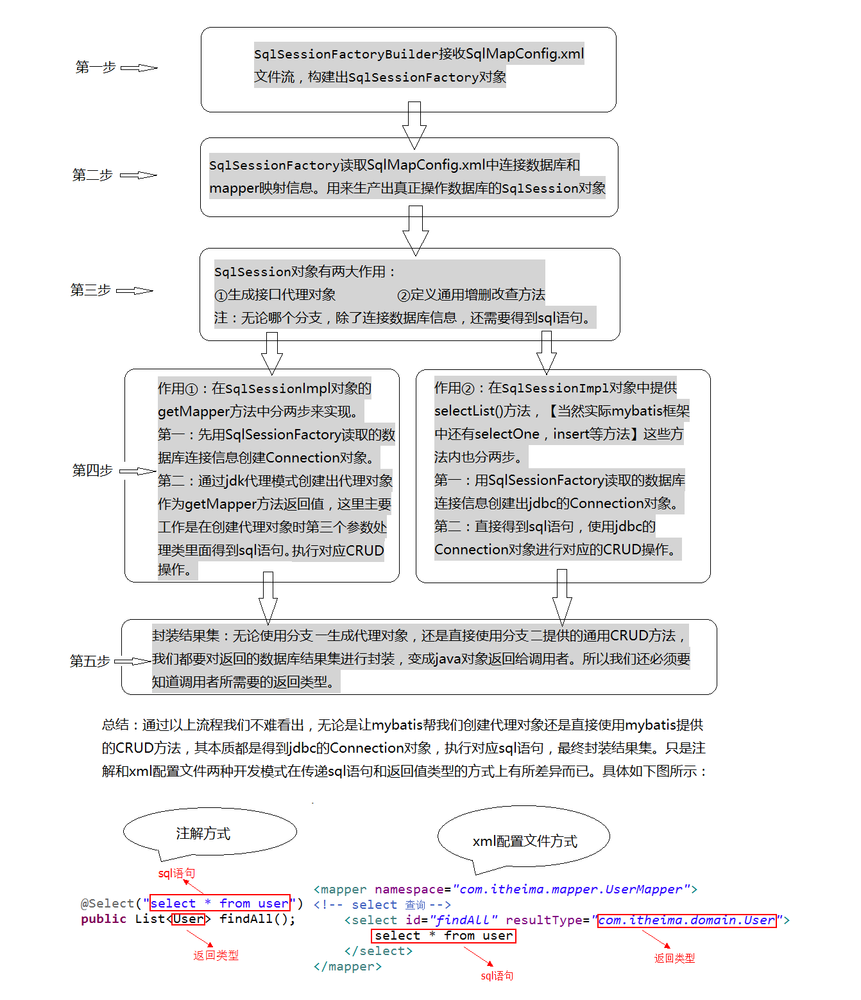
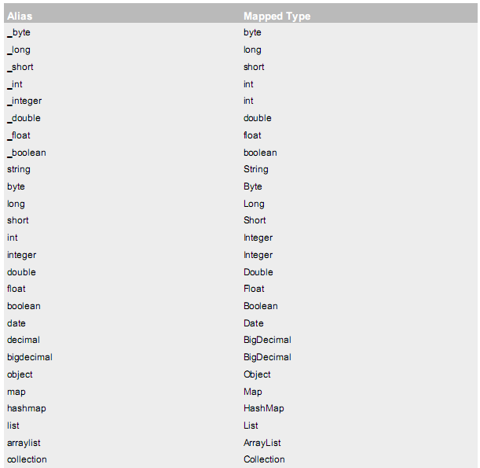

Mybatis 框架第一天第1章 框架概述1.1 什么是框架1.1.1 什么是框架 1.1.2 框架要解决的问题 1.1.3 软件开发的分层重要性 1.1.4 分层开发下的常见框架 常见的 JavaEE开发框架： 1、解决数据的持久化问题的框架2、解决 WEB层问题的 MVC框架 3、解决技术整合问题的框架 1.1.5 MyBatis 框架概述 1.2 JDBC 编程的分析 1.2.1 jdbc 程序的回顾 1.2.2 jdbc 问题分析 第2章 Mybatis 框架快速入门 2.1 Mybatis 框架开发的准备 2.1.1 官网下载 Mybatis 框架 2.2 搭建 Mybatis 开发环境 2.2.1 创建 maven 工程 2.2.2 添加 Mybatis3.4.5 的坐标 2.2.3 编写 User 实体类 2.2.4 编写持久层接口 IUserDao 2.2.5 编写持久层接口的映射文件 IUserDao.xml 2.2.6 编写 SqlMapConfig.xml 配置文件 2.2.7 编写测试类2.3 小结 2.4 补充（基于注解的 mybatis 使用） 2.4.1 在持久层接口中添加注解2.4.2 修改 SqlMapConfig.xml 2.4.3 注意事项： 第3章 自定义 Mybatis 框架 3.1 自定义 Mybatis 框架的分析 3.1.1 涉及知识点介绍 3.1.2 分析流程3.2 前期准备 3.2.1 创建 Maven 工程 3.2.2 引入相关坐标 3.2.3 引入工具类到项目中3.2.4 编写 SqlMapConfig.xml3.2.5 编写读取配置文件类3.2.6 编写 Mapper 类3.2.7 编写 Configuration 配置类3.2.8 编写 User 实体类 3.3 基于 XML 的自定义 mybatis 框架 3.3.1 编写持久层接口和 IUserDao.xml 3.3.2 编写构建者类3.3.4 编写 SqlSession 接口和实现类3.3.5 编写用于创建 Dao 接口代理对象的类 3.3.6 运行测试类 3.4 基于注解方式定义 Mybatis 框架 3.4.1 自定义**@Select** 注解3.4.2 修改持久层接口3.4.3 修改 SqlMapConfig.xml 3.5 自定义 Mybatis 的设计模式说明 3.5.2 代理模式**(MapperProxyFactory)** 3.5.3 构建者模式**(SqlSessionFactoryBuilder)** 第二天第1章 回顾1.1 自定义流程再分析1.2 mybatis 环境搭建步骤 第2章 基于代理 Dao 实现 CRUD 操作 2.1 根据 ID 查询 2.1.1 在持久层接口中添加 findById 方法 2.1.2 在用户的映射配置文件中配置2.1.3 在测试类添加测试2.2 保存操作 2.2.1 在持久层接口中添加新增方法2.2.2 在用户的映射配置文件中配置2.2.3 添加测试类中的测试方法2.2.4 问题扩展：新增用户 id 的返回值 2.3 用户更新 2.3.1 在持久层接口中添加更新方法2.3.2 在用户的映射配置文件中配置2.3.3 加入更新的测试方法 2.4 用户删除 2.4.1 在持久层接口中添加删除方法2.4.2 在用户的映射配置文件中配置 2.4.3 加入删除的测试方法 2.5 用户模糊查询 2.5.1 在持久层接口中添加模糊查询方法 2.5.2 在用户的映射配置文件中配置2.5.3 加入模糊查询的测试方法2.5.4 模糊查询的另一种配置方式2.5.5 #{}与${}的区别 2.5.6 模糊查询的${value}源码分析 2.6 查询使用聚合函数 2.6.1 在持久层接口中添加模糊查询方法2.6.2 在用户的映射配置文件中配置 2.6.3 加入聚合查询的测试方法 2.7 Mybatis 与 JDBC 编程的比较第3章 Mybatis 的参数深入 3.1 parameterType 配置参数 3.1.1 使用说明3.1.2 注意事项 3.2 传递 pojo 包装对象 3.2.1 编写 QueryVo3.2.2 编写持久层接口3.2.3 持久层接口的映射文件3.2.4 测试包装类作为参数第4章 Mybatis 的输出结果封装 4.1 resultType 配置结果类型 4.1.1 基本类型示例 4.1.1.1 Dao 接口4.1.1.2 映射配置 4.1.2 实体类类型示例4.1.2.1 Dao 接口4.1.2.2 映射配置4.1.3 特殊情况示例 4.1.3.1 修改实体类 4.1.3.2 Dao 接口4.1.3.3 映射配置4.1.3.4 测试查询结果4.1.3.5 修改映射配置 4.2 resultMap 结果类型 4.2.1 定义 resultMap 4.2.2 映射配置 4.2.3 测试结果 第5章 Mybatis 传统 DAO 层开发[了解] 5.1 Mybatis 实现 DAO 的传统开发方式 5.1.1 持久层 Dao 接口5.1.2 持久层 Dao 实现类5.1.3 持久层映射配置5.1.4 测试类第6章 SqlMapConfig.xml配置文件 6.1 配置内容 6.1.1 SqlMapConfig.xml 中配置的内容和顺序6.2 properties（属性） 6.2.1 第一种6.2 properties（属性） 6.2.1 第一种6.2.2 第二种 6.2.2.1 在 classpath 下定义 db.properties 文件6.2.3 此时我们的 dataSource 标签就变成了引用上面的配置6.3 typeAliases（类型别名） 6.3.1 自定义别名： 6.4 mappers（映射器） 6.4.1 6.4.2 6.4.3 第三天第1章 Mybatis 连接池与事务深入1.1 Mybatis 的连接池技术 1.1.1 Mybatis 连接池的分类 1.1.2 Mybatis 中数据源的配置 1.1.3 Mybatis 中 DataSource 的存取 1.2 Mybatis 的事务控制 1.2.1 JDBC 中事务的回顾 1.2.2 Mybatis 中事务提交方式 1.2.3 Mybatis 自动提交事务的设置 第2章 Mybatis 的动态 SQL 语句 2.1 动态 SQL 之标签 2.1.1 持久层 Dao 接口 2.1.2 持久层 Dao 映射配置 2.1.3 测试 2.2 动态 SQL 之标签 2.2.1 持久层 Dao 映射配置 2.3 动态标签之标签 2.3.1 需求 2.3.1.1 在 QueryVo 中加入一个 List 集合用于封装参数 2.3.2 持久层 Dao 接口 2.3.3.1 编写测试方法2.4 Mybatis 中简化编写的 SQL 片段 2.4.1 定义代码片段 2.4.2 引用代码片段第3章 Mybatis 多表查询之一对多 3.1 一对一查询(多对一) 3.1.1 方式一 3.1.1.1 定义账户信息的实体类 3.1.1.2 编写 Sql 语句 3.1.1.3 定义 AccountUser 类 3.1.1.4 定义账户的持久层 Dao 接口3.1.1.5 定义 AccountDao.xml 文件中的查询配置信息3.1.1.6 创建 AccountTest 测试类 3.1.1.7 小结： 3.1.2 方式二 3.1.2.1 修改 Account 类 3.1.2.2 修改 AccountDao 接口中的方法3.1.2.3 重新定义 AccountDao.xml 文件3.1.2.4 在 AccountTest 类中加入测试方法3.2 一对多查询 3.2.1 编写 SQL 语句3.2.2 User 类加入 List3.2.3 用户持久层 Dao 接口中加入查询方法 3.2.4 用户持久层 Dao 映射文件配置3.2.5 测试方法第4章 Mybatis 多表查询之多对多 4.1 实现 Role 到 User 多对多 4.1.1 用户与角色的关系模型 4.1.2 业务要求及实现 SQL 4.1.3 编写角色实体类4.1.4 编写 Role 持久层接口 4.1.5 编写映射文件4.1.6 编写测试类 4.2 实现 User 到 Role 的多对多 4.2.1 User 到 Role 的多对多 4.2.2 作业：实现 User 到 Role 的一对多查询 第四天 第1章 Mybatis 延迟加载策略 1.2 实现需求 1.3 使用 assocation 实现延迟加载 1.3.1 账户的持久层 DAO 接口 1.3.2 账户的持久层映射文件1.3.3 用户的持久层接口和映射文件 1.3.4 开启 Mybatis 的延迟加载策略 1.3.5 编写测试只查账户信息不查用户信息。 1.4 使用 Collection 实现延迟加载 1.4.1 在 User 实体类中加入 List属性1.4.2 编写用户和账户持久层接口的方法1.4.3 编写用户持久层映射配置1.4.4 编写账户持久层映射配置1.4.5 测试只加载用户信息2.1 Mybatis 一级缓存 2.1.1 证明一级缓存的存在 2.1.1.1 编写用户持久层 Dao 接口2.1.1.2 编写用户持久层映射文件2.1.1.3 编写测试方法2.1.2 一级缓存的分析 2.1.3 测试一级缓存的清空2.2 Mybatis 二级缓存 2.2.1 二级缓存结构图2.2.2 二级缓存的开启与关闭 2.2.2.1 第一步：在 SqlMapConfig.xml 文件开启二级缓存2.2.2.2 第二步：配置相关的 Mapper 映射文件2.2.2.3 第三步：配置 statement 上面的 useCache 属性2.2.3 二级缓存测试2.2.4 二级缓存注意事项 第3章 Mybatis 注解开发 3.1 mybatis 的常用注解说明3.2 使用 Mybatis 注解实现基本 CRUD 3.2.1 编写实体类3.2.2 使用注解方式开发持久层接口 3.2.3 编写 SqlMapConfig 配置文件 3.2.4 编写测试方法 3.3 使用注解实现复杂关系映射开发 3.3.1 复杂关系映射的注解说明3.3.2 使用注解实现一对一复杂关系映射及延迟加载 3.3.2.1 添加 User 实体类及 Account 实体类3.3.2.3 添加用户的持久层接口并使用注解配置3.3.2.4 测试一对一关联及延迟加载 3.3.3 使用注解实现一对多复杂关系映射 3.3.3.1 User 实体类加入 List3.3.3.2 编写用户的持久层接口并使用注解配置3.3.3.3 编写账户的持久层接口并使用注解配置3.3.3.4 添加测试方法3.4 mybatis 基于注解的二级缓存 3.4.1 在 SqlMapConfig 中开启二级缓存支持3.4.2 在持久层接口中使用注解配置二级缓存
Mybatis 框架
第一天
第1章 框架概述
1.1 什么是框架
1.1.1 什么是框架
框架（Framework）是整个或部分系统的可重用设计，表现为一组抽象构件及构件实例间交互的方法;另一种 定义认为，框架是可被应用开发者定制的应用骨架。前者是从应用方面而后者是从目的方面给出的定义。
简而言之，框架其实就是某种应用的半成品，就是一组组件，供你选用完成你自己的系统。简单说就是使用别 人搭好的舞台，你来做表演。而且，框架一般是成熟的，不断升级的软件。
1.1.2 框架要解决的问题
框架要解决的最重要的一个问题是技术整合的问题，在 J2EE 的 框架中，有着各种各样的技术，不同的 软件企业需要从 J2EE 中选择不同的技术，这就使得软件企业最终的应用依赖于这些技术，技术自身的复杂性和技 术的风险性将会直接对应用造成冲击。而应用是软件企业的核心，是竞争力的关键所在，因此应该将应用自身的设 计和具体的实现技术解耦。这样，软件企业的研发将集中在应用的设计上，而不是具体的技术实现，技术实现是应 用的底层支撑，它不应该直接对应用产生影响。
框架一般处在低层应用平台（如 J2EE）和高层业务逻辑之间的中间层。
1.1.3 软件开发的分层重要性
框架的重要性在于它实现了部分功能，并且能够很好的将低层应用平台和高层业务逻辑进行了缓和。为了实现 软件工程中的“高内聚、低耦合”。把问题划分开来各个解决，易于控制，易于延展，易于分配资源。我们常见的 MVC软件设计思想就是很好的分层思想。
通过分层更好的实现了各个部分的职责，在每一层将再细化出不同的框架，分别解决各层关注的问题。
1.1.4 分层开发下的常见框架
常见的 JavaEE开发框架：
1、解决数据的持久化问题的框架

作为持久层的框架，还有一个封装程度更高的框架就是 Hibernate，但这个框架因为各种原因目前在国内的 流行程度下降太多，现在公司开发也越来越少使用。目前使用 Spring Data来实现数据持久化也是一种趋势。
2、解决 WEB层问题的 MVC框架

3、解决技术整合问题的框架

1.1.5 MyBatis 框架概述
mybatis是一个优秀的基于 java的持久层框架，它内部封装了 jdbc，使开发者只需要关注 sql语句本身， 而不需要花费精力去处理加载驱动、创建连接、创建 statement等繁杂的过程。
mybatis通过 xml或注解的方式将要执行的各种 statement配置起来，并通过 java对象和 statement中 sql的动态参数进行映射生成最终执行的 sql语句，最后由 mybatis框架执行 sql并将结果映射为 java对象并 返回。
采用 ORM思想解决了实体和数据库映射的问题，对 jdbc进行了封装，屏蔽了 jdbc api底层访问细节，使我 们不用与 jdbc api打交道，就可以完成对数据库的持久化操作。
为了我们能够更好掌握框架运行的内部过程，并且有更好的体验，下面我们将从自定义 Mybatis 框架开始来 学习框架。此时我们将会体验框架从无到有的过程体验，也能够很好的综合前面阶段所学的基础。
1.2 JDBC 编程的分析
1.2.1 jdbc 程序的回顾
public static void main(String[] args) { Connection connection = null; PreparedStatement preparedStatement = null; ResultSet resultSet = null; try { //加载数据库驱动 Class.forName("com.mysql.jdbc.Driver"); //通过驱动管理类获取数据库链接 connection = DriverManager.getConnection("jdbc:mysql://localhost:3306/mybatis?characterEncoding=utf-8","ro ot", "root"); //定义 sql语句 ?表示占位符 String sql = "select * from user where username = ?"; //获取预处理 statement preparedStatement = connection.prepareStatement(sql); //设置参数，第一个参数为 sql语句中参数的序号（从 1开始），第二个参数为设置的参数值 preparedStatement.setString(1, "王五"); //向数据库发出 sql执行查询，查询出结果集 resultSet = preparedStatement.executeQuery(); //遍历查询结果集 while(resultSet.next()){ System.out.println(resultSet.getString("id")+" "+resultSet.getString("username")); } } catch (Exception e) { e.printStackTrace(); }finally{ //释放资源 if(resultSet!=null){ try { resultSet.close(); } catch (SQLException e) { e.printStackTrace(); } } if(preparedStatement!=null){ try { preparedStatement.close(); } catch (SQLException e) { e.printStackTrace(); } } if(connection!=null){ try { connection.close(); } catch (SQLException e) { // TODO Auto-generated catch block e.printStackTrace(); } } } }上边使用 jdbc的原始方法（未经封装）实现了查询数据库表记录的操作。
1.2.2 jdbc 问题分析
1、数据库链接创建、释放频繁造成系统资源浪费从而影响系统性能，如果使用数据库链接池可解决此问题。
2、Sql语句在代码中硬编码，造成代码不易维护，实际应用 sql 变化的可能较大，sql变动需要改变 java 代码。
3、使用 preparedStatement向占有位符号传参数存在硬编码，因为 sql语句的 where条件不一定，可能 多也可能少，修改 sql还要修改代码，系统不易维护。
4、对结果集解析存在硬编码（查询列名），sql 变化导致解析代码变化，系统不易维护，如果能将数据库记 录封装成 pojo对象解析比较方便。
第2章 Mybatis 框架快速入门
通过前面的学习，我们已经能够使用所学的基础知识构建自定义的 Mybatis 框架了。这个过程是基本功的考 验，我们已经强大了不少，但现实是残酷的，我们所定义的 Mybatis框架和真正的 Mybatis框架相比，还是显得 渺小。行业内所流行的 Mybatis框架现在我们将开启学习。
2.1 Mybatis 框架开发的准备
2.1.1 官网下载 Mybatis 框架
从百度中“mybatis download”可以下载最新的 Mybatis开发包。
进入选择语言的界面，进入中文版本的开发文档。
我们可以看到熟悉的中文开发文档了。
下载相关的 jar 包或 maven 开发的坐标。

下载的 zip 文件如下（ 我们的资料文件夹）：
我们所使用的 Mybatis 版本是 3.4.5 版本。
2.2 搭建 Mybatis 开发环境
2.2.1 创建 maven 工程
xxxxxxxxxx创建 mybatis01的工程，工程信息如下： Groupid:com.itheima ArtifactId:mybatis01 Packing:jar 2.2.2 添加 Mybatis3.4.5 的坐标
在 pom.xml 文件中添加 Mybatis3.4.5 的坐标，如下
xxxxxxxxxx<dependencies> <dependency> <groupId>org.mybatis</groupId> <artifactId>mybatis</artifactId> <version>3.4.5</version> </dependency> <dependency> <groupId>junit</groupId> <artifactId>junit</artifactId> <version>4.10</version> <scope>test</scope> </dependency> <dependency> <groupId>mysql</groupId> <artifactId>mysql-connector-java</artifactId> <version>5.1.6</version> <scope>runtime</scope> </dependency> <dependency> <groupId>log4j</groupId> <artifactId>log4j</artifactId> <version>1.2.12</version> </dependency></dependencies>2.2.3 编写 User 实体类
xxxxxxxxxx/*** * <p>Title: User</p>* <p>Description: 用户的实体类</p>* <p>Company: http://www.itheima.com/ </p>*/public class User implements Serializable {private Integer id;private String username;private Date birthday;private String sex;private String address; public Integer getId() { return id; } public void setId(Integer id) { this.id = id; } public String getUsername() { return username; } public void setUsername(String username) { this.username = username; } public Date getBirthday() { return birthday; } public void setBirthday(Date birthday) { this.birthday = birthday; } public String getSex() { return sex; } public void setSex(String sex) { this.sex = sex; } public String getAddress() { return address; } public void setAddress(String address) { this.address = address; } public String toString() { return "User [id=" + id + ", username=" + username + ", birthday=" + birthday + ", sex=" + sex + ", address=" + address + "]"; } }2.2.4 编写持久层接口 IUserDao
xxxxxxxxxxIUserDao接口就是我们的持久层接口（也可以写成 UserDao或者 UserMapper）,具体代码如下： /** * * <p>Title: IUserDao</p> * <p>Description: 用户的持久层操作</p> * <p>Company: http://www.itheima.com/ </p> */ public interface IUserDao { /** * 查询所有用户 * @return */ List<User> findAll(); }2.2.5 编写持久层接口的映射文件 IUserDao.xml
要求：
创建位置：必须和持久层接口在相同的包中。
名称：必须以持久层接口名称命名文件名，扩展名是.xml
xxxxxxxxxx <mapper namespace="com.itheima.dao.IUserDao"> <!-- 配置查询所有操作 --> <select id="findAll" resultType="com.itheima.domain.User"> select * from user </select></mapper>2.2.6 编写 SqlMapConfig.xml 配置文件
xxxxxxxxxx <configuration> <!-- 配置 mybatis 的环境 --> <environments default="mysql"> <!-- 配置 mysql 的环境 --> <environment id="mysql"> <!-- 配置事务的类型 --> <transactionManager type="JDBC"> </transactionManager> <!-- 配置连接数据库的信息：用的是数据源(连接池) --> <dataSource type="POOLED"> <property name="driver" value="com.mysql.jdbc.Driver"/> <property name="url" value="jdbc:mysql://localhost:3306/ee50"/> <property name="username" value="root"/> <property name="password" value="1234"/> </dataSource> </environment> </environments> <!-- 告知 mybatis 映射配置的位置 --> <mappers> <mapper resource="com/itheima/dao/IUserDao.xml"/> </mappers></configuration>2.2.7 编写测试类
xxxxxxxxxx/*** * <p>Title: MybatisTest</p>* <p>Description: 测试 mybatis 的环境</p>* <p>Company: http://www.itheima.com/ </p>*/public class MybatisTest { public static void main(String[] args)throws Exception { //1.读取配置文件 InputStream in = Resources.getResourceAsStream("SqlMapConfig.xml"); //2.创建 SqlSessionFactory 的构建者对象 SqlSessionFactoryBuilder builder = new SqlSessionFactoryBuilder(); //3.使用构建者创建工厂对象 SqlSessionFactory SqlSessionFactory factory = builder.build(in); //4.使用 SqlSessionFactory 生产 SqlSession 对象 SqlSession session = factory.openSession(); //5.使用 SqlSession 创建 dao 接口的代理对象 IUserDao userDao = session.getMapper(IUserDao.class); //6.使用代理对象执行查询所有方法 List<User> users = userDao.findAll(); for(User user : users) { System.out.println(user); } //7.释放资源 session.close(); in.close(); } }2.3 小结
通过快速入门示例，我们发现使用 mybatis 是非常容易的一件事情，因为只需要编写 Dao 接口并且按照 mybatis 要求编写两个配置文件，就可以实现功能。远比我们之前的 jdbc 方便多了。（我们使用注解之后，将变得 更为简单，只需要编写一个 mybatis 配置文件就够了。）
但是，这里面包含了许多细节，比如为什么会有工厂对象（SqlSessionFactory）,为什么有了工厂之后还要有构建者对象（SqlSessionFactoryBuilder），为什么 IUserDao.xml 在创建时有位置和文件名的要求等等。
这些问题我们在自定义 mybatis 框架的章节，通过层层剥离的方式，给大家讲解。
请注意：我们讲解自定义 Mybatis 框架，不是让大家回去自己去写个 mybatis，而是让我们能更好了了解 mybatis 内部是怎么执行的，在以后的开发中能更好的使用 mybatis 框架，同时对它的设计理念（设计模式）有 一个认识。
2.4 补充（基于注解的 mybatis 使用）
2.4.1 在持久层接口中添加注解
xxxxxxxxxx/*** * <p>Title: IUserDao</p>* <p>Description: 用户的持久层操作</p>* <p>Company: http://www.itheima.com/ </p>*/public interface IUserDao { /** * 查询所有用户 * @return */ ("select * from user") List<User> findAll();}2.4.2 修改 SqlMapConfig.xml
xxxxxxxxxx<!-- 告知 mybatis 映射配置的位置 --> <mappers> <mapper class=*"com.itheima.dao.IUserDao"*/> </mappers> 2.4.3 注意事项：
在使用基于注解的 Mybatis 配置时，请移除 xml 的映射配置（IUserDao.xml）。
补充
第3章 自定义 Mybatis 框架
3.1 自定义 Mybatis 框架的分析
3.1.1 涉及知识点介绍
本章我们将使用前面所学的基础知识来构建一个属于自己的持久层框架，将会涉及到的一些知识点：工厂模式（Factory 工厂模式）、构造者模式（Builder 模式）、代理模式，反射，自定义注解，注解的反射，xml 解析， 数据库元数据，元数据的反射等。
3.1.2 分析流程
3.2 前期准备
3.2.1 创建 Maven 工程
xxxxxxxxxx创建 mybatis02 的工程，工程信息如下： Groupid:com.itheima ArtifactId:mybatis02 Packing:jar 3.2.2 引入相关坐标
xxxxxxxxxx<dependencies> <!-- 日志坐标 --> <dependency> <groupId>log4j</groupId> <artifactId>log4j</artifactId> <version>1.2.12</version> </dependency> <!-- 解析 xml 的 dom4j --> <dependency> <groupId>dom4j</groupId> <artifactId>dom4j</artifactId> <version>1.6.1</version> </dependency> <!-- mysql 驱动 --> <dependency> <groupId>mysql</groupId> <artifactId>mysql-connector-java</artifactId> <version>5.1.6</version> </dependency> <!-- dom4j 的依赖包 jaxen --> <dependency> <groupId>jaxen</groupId> <artifactId>jaxen</artifactId> <version>1.1.6</version> </dependency> <dependency> <groupId>junit</groupId> <artifactId>junit</artifactId> <version>4.10</version> </dependency></dependencies>3.2.3 引入工具类到项目中
x/*** @author 黑马程序员* @Company http://www.ithiema.com* 用于解析配置文件*/public class XMLConfigBuilder { /** * 解析主配置文件，把里面的内容填充到 DefaultSqlSession 所需要的地方 * 使用的技术： * dom4j+xpath * @param session */ public static void loadConfiguration(DefaultSqlSession session,InputStream config){ try{ //定义封装连接信息的配置对象（mybatis 的配置对象） Configuration cfg = new Configuration(); //1.获取 SAXReader 对象 SAXReader reader = new SAXReader(); //2.根据字节输入流获取 Document 对象 Document document = reader.read(config); //3.获取根节点 Element root = document.getRootElement(); //4.使用 xpath 中选择指定节点的方式，获取所有 property 节点 List<Element> propertyElements = root.selectNodes("//property"); //5.遍历节点 for(Element propertyElement : propertyElements){ //判断节点是连接数据库的哪部分信息 //取出 name 属性的值 String name = propertyElement.attributeValue("name"); if("driver".equals(name)){ //表示驱动 //获取 property 标签 value 属性的值 String driver = propertyElement.attributeValue("value"); cfg.setDriver(driver); } if("url".equals(name)){ //表示连接字符串 //获取 property 标签 value 属性的值 String url = propertyElement.attributeValue("value"); cfg.setUrl(url); } if("username".equals(name)){ //表示用户名 //获取 property 标签 value 属性的值 String username = propertyElement.attributeValue("value"); cfg.setUsername(username); } if("password".equals(name)){ //表示密码 //获取 property 标签 value 属性的值 String password = propertyElement.attributeValue("value"); cfg.setPassword(password); } } //取出 mappers 中的所有 mapper 标签，判断他们使用了 resource 还是 class 属性 List<Element> mapperElements = root.selectNodes("//mappers/mapper"); //遍历集合 for(Element mapperElement : mapperElements){ //判断 mapperElement 使用的是哪个属性 Attribute attribute = mapperElement.attribute("resource"); if(attribute != null){ System.out.println("使用的是 XML"); //表示有 resource 属性，用的是 XML //取出属性的值 String mapperPath = attribute.getValue();// 获 取 属 性 的 值 "com/itheima/dao/IUserDao.xml" //把映射配置文件的内容获取出来，封装成一个 map Map<String,Mapper> mappers = loadMapperConfiguration(mapperPath); //给 configuration 中的 mappers 赋值 cfg.setMappers(mappers); }else{ System.out.println("使用的是注解"); //表示没有 resource 属性，用的是注解 //获取 class 属性的值 String daoClassPath = mapperElement.attributeValue("class"); //根据 daoClassPath 获取封装的必要信息 Map<String,Mapper> mappers = loadMapperAnnotation(daoClassPath); //给 configuration 中的 mappers 赋值 cfg.setMappers(mappers); } } //把配置对象传递给 DefaultSqlSession session.setCfg(cfg); }catch(Exception e){ throw new RuntimeException(e); }finally{ try { config.close(); }catch(Exception e){ e.printStackTrace(); } } } /*** 根据传入的参数，解析 XML，并且封装到 Map 中* @param mapperPath 映射配置文件的位置* @return map 中包含了获取的唯一标识（key 是由 dao 的全限定类名和方法名组成）* 以及执行所需的必要信息（value 是一个 Mapper 对象，里面存放的是执行的 SQL 语句和 要封装的实体类全限定类名） */ private static Map<String,Mapper> loadMapperConfiguration(String mapperPath)throws IOException { InputStream in = null; try{ //定义返回值对象 Map<String,Mapper> mappers = new HashMap<String,Mapper>(); //1.根据路径获取字节输入流 in = Resources.getResourceAsStream(mapperPath); //2.根据字节输入流获取 Document 对象 SAXReader reader = new SAXReader(); Document document = reader.read(in); //3.获取根节点 Element root = document.getRootElement(); //4.获取根节点的 namespace 属性取值 String namespace = root.attributeValue("namespace"); //是组成 map 中 key 的部分 //5.获取所有的 select 节点 List<Element> selectElements = root.selectNodes("//select"); //6.遍历 select 节点集合 for(Element selectElement : selectElements){ //取出 id 属性的值 组成 map 中 key 的部分 String id = selectElement.attributeValue("id"); //取出 resultType 属性的值 组成 map 中 value 的部分 String resultType = selectElement.attributeValue("resultType"); //取出文本内容 组成 map 中 value 的部分 String queryString = selectElement.getText(); //创建 Key String key = namespace+"."+id; //创建 Value Mapper mapper = new Mapper(); mapper.setQueryString(queryString); mapper.setResultType(resultType); //把 key 和 value 存入 mappers 中 mappers.put(key,mapper); } return mappers; }catch(Exception e){ throw new RuntimeException(e); }finally{ in.close(); } }/*** 根据传入的参数，得到 dao 中所有被 select 注解标注的方法。* 根据方法名称和类名，以及方法上注解 value 属性的值，组成 Mapper 的必要信息* @param daoClassPath* @return*/ private static Map<String,Mapper> loadMapperAnnotation(String daoClassPath)throws Exception{ //定义返回值对象 Map<String,Mapper> mappers = new HashMap<String, Mapper>(); //1.得到 dao 接口的字节码对象 Class daoClass = Class.forName(daoClassPath); //2.得到 dao 接口中的方法数组 Method[] methods = daoClass.getMethods(); //3.遍历 Method 数组 for(Method method : methods){ //取出每一个方法，判断是否有 select 注解 boolean isAnnotated = method.isAnnotationPresent(Select.class); if(isAnnotated){ //创建 Mapper 对象 Mapper mapper = new Mapper(); //取出注解的 value 属性值 Select selectAnno = method.getAnnotation(Select.class); String queryString = selectAnno.value(); mapper.setQueryString(queryString); //获取当前方法的返回值，还要求必须带有泛型信息 Type type = method.getGenericReturnType();//List<User> //判断 type 是不是参数化的类型 if(type instanceof ParameterizedType){ //强转 ParameterizedType ptype = (ParameterizedType)type; //得到参数化类型中的实际类型参数 Type[] types = ptype.getActualTypeArguments(); //取出第一个 Class domainClass = (Class)types[0]; //获取 domainClass 的类名 String resultType = domainClass.getName(); //给 Mapper 赋值 mapper.setResultType(resultType); } //组装 key 的信息 //获取方法的名称 String methodName = method.getName(); String className = method.getDeclaringClass().getName(); String key = className+"."+methodName; //给 map 赋值 mappers.put(key,mapper); } } return mappers; } }/*** @author 黑马程序员* @Company http://www.ithiema.com* 负责执行 SQL 语句，并且封装结果集*/ public class Executor { public <E> List<E> selectList(Mapper mapper, Connection conn) { PreparedStatement pstm = null; ResultSet rs = null; try { //1.取出 mapper 中的数据 String queryString = mapper.getQueryString(); //select * from user String resultType = mapper.getResultType(); //com.itheima.domain.User Class domainClass = Class.forName(resultType); //User.class //2.获取 PreparedStatement 对象 pstm = conn.prepareStatement(queryString); //3.执行 SQL 语句，获取结果集 rs = pstm.executeQuery(); //4.封装结果集 List<E> list = new ArrayList<E>();//定义返回值 while(rs.next()) { //实例化要封装的实体类对象 E obj = (E)domainClass.newInstance();//User 对象 //取出结果集的元信息：ResultSetMetaData ResultSetMetaData rsmd = rs.getMetaData(); //取出总列数 int columnCount = rsmd.getColumnCount(); //遍历总列数 for (int i = 1; i <= columnCount; i++) { //获取每列的名称，列名的序号是从 1 开始的 String columnName = rsmd.getColumnName(i); //根据得到列名，获取每列的值 Object columnValue = rs.getObject(columnName); //给 obj 赋值：使用 Java 内省机制（借助 PropertyDescriptor 实现属性的封装） PropertyDescriptor pd = new PropertyDescriptor(columnName,domainClass); //要求：实体类的属性和数据库表的列名保持一种 //获取它的写入方法 Method writeMethod = pd.getWriteMethod(); //setUsername(String username); //把获取的列的值，给对象赋值 writeMethod.invoke(obj,columnValue); } //把赋好值的对象加入到集合中 list.add(obj); } return list; } catch (Exception e) { throw new RuntimeException(e); } finally { release(pstm,rs); } } private void release(PreparedStatement pstm,ResultSet rs){ if(rs != null){ try { rs.close(); }catch(Exception e){ e.printStackTrace(); } } if(pstm != null){ try { pstm.close(); }catch(Exception e){ e.printStackTrace(); } } } }/*** * <p>Title: DataSourceUtil</p>* <p>Description: 数据源的工具类</p>* <p>Company: http://www.itheima.com/ </p>*/ public class DataSourceUtil { /** * 获取连接 * @param cfg * @return */ public static Connection getConnection(Configuration cfg) { try { Class.forName(cfg.getDriver()); Connection conn = DriverManager.getConnection(cfg.getUrl(),cfg.getUsername() , cfg.getPassword()); return conn; } catch (Exception e) { throw new RuntimeException(e); } } }3.2.4 编写 SqlMapConfig.xml
xxxxxxxxxx <configuration> <environments default="development"> <environment id="development"> <transactionManager type="JDBC" /> <dataSource type="POOLED"> <property name="driver" value="com.mysql.jdbc.Driver" ></property> <property name="url" value="jdbc:mysql:///eesy" ></property> <property name="username" value="root"></property> <property name="password" value="1234"></property> </dataSource> </environment> </environments></configuration>注意：
此处我们直接使用的是 mybatis 的配置文件，但是由于我们没有使用 mybatis 的 jar 包，所以要把配置文件的约束删掉否则会报错（如果电脑能接入互联网，不删也行）
3.2.5 编写读取配置文件类
xxxxxxxxxx/*** * <p>Title: Resources</p>* <p>Description: 用于读取配置文件的类</p>* <p>Company: http://www.itheima.com/ </p>*/public class Resources {/*** 用于加载 xml 文件，并且得到一个流对象* @param xmlPath* @return* 在实际开发中读取配置文件:* 第一：使用类加载器。但是有要求：a 文件不能过大。 b 文件必须在类路径下(classpath)* 第二：使用 ServletContext 的 getRealPath()*/ public static InputStream getResourceAsStream(String xmlPath) { return Resources.class.getClassLoader().getResourceAsStream(xmlPath); } }3.2.6 编写 Mapper 类
xxxxxxxxxx/*** * <p>Title: Mapper</p>* <p>Description: 用于封装查询时的必要信息：要执行的 SQL 语句和实体类的全限定类名</p>* <p>Company: http://www.itheima.com/ </p>*/public class Mapper { private String queryString;//sql private String resultType;//结果类型的全限定类名 public String getQueryString() { return queryString; } public void setQueryString(String queryString) { this.queryString = queryString; } public String getResultType() { return resultType; } public void setResultType(String resultType) { this.resultType = resultType; } }3.2.7 编写 Configuration 配置类
xxxxxxxxxx/*** 核心配置类* 1.数据库信息* 2.sql 的 map 集合*/public class Configuration { private String username; //用户名 private String password;//密码 private String url;//地址 private String driver;//驱动 //map 集合 Map<唯一标识，Mapper> 用于保存映射文件中的 sql 标识及 sql 语句 private Map<String,Mapper> mappers; public String getUsername() { return username; } public void setUsername(String username) { this.username = username; } public String getPassword() { return password; } public void setPassword(String password) { this.password = password; } public String getUrl() { return url; } public void setUrl(String url) { this.url = url; } public String getDriver() { return driver; } public void setDriver(String driver) { this.driver = driver; } public Map<String, Mapper> getMappers() { return mappers; } public void setMappers(Map<String, Mapper> mappers) { this.mappers = mappers; } }3.2.8 编写 User 实体类
User 实体类：
xxxxxxxxxxpublic class User implements Serializable { private int id; private String username;// 用户姓名 private String sex;// 性别 private Date birthday;// 生日 private String address;// 地址 //省略 getter 与 setter public String toString() { return "User [id=" + id + ", username=" + username + ", sex=" + sex + ", birthday=" + birthday + ", address=" + address + "]"; } }3.3 基于 XML 的自定义 mybatis 框架
3.3.1 编写持久层接口和 IUserDao.xml
xxxxxxxxxx/*** * <p>Title: IUserDao</p>* <p>Description: 用户的持久层操作</p>* <p>Company: http://www.itheima.com/ </p>*/public interface IUserDao { /** * 查询所有用户 * @return */ List<User> findAll();} <?xml version="1.0" encoding="UTF-8"?> <mapper namespace="com.itheima.dao.IUserDao"> <!-- 配置查询所有操作 --> <select id="findAll" resultType="com.itheima.domain.User"> select * from user </select> </mapper>注意： 此处我们使用的也是 mybatis 的配置文件，所以也要把约束删除了
3.3.2 编写构建者类
xxxxxxxxxx/*** * <p>Title: SqlSessionFactoryBuilder</p>* <p>Description: 用于构建 SqlSessionFactory 的</p>* <p>Company: http://www.itheima.com/ </p>*/public class SqlSessionFactoryBuilder { /** * 根据传入的流，实现对 SqlSessionFactory 的创建 * @param in 它就是 SqlMapConfig.xml 的配置以及里面包含的 IUserDao.xml 的配置 * @return */ public SqlSessionFactory build(InputStream in) { DefaultSqlSessionFactory factory = new DefaultSqlSessionFactory(); //给 factory 中 config 赋值 factory.setConfig(in); return factory; } }/** * * <p>Title: SqlSessionFactory</p> * <p>Description: SqlSessionFactory 的接口</p> * <p>Company: http://www.itheima.com/ </p> */public interface SqlSessionFactory { /** * 创建一个新的 SqlSession 对象 * @return */ SqlSession openSession();}/** * * <p>Title: DefaultSqlSessionFactory</p> * <p>Description:SqlSessionFactory 的默认实现 </p> * <p>Company: http://www.itheima.com/ </p> */public class DefaultSqlSessionFactory implements SqlSessionFactory { private InputStream config = null; public void setConfig(InputStream config) { this.config = config; } public SqlSession openSession() { DefaultSqlSession session = new DefaultSqlSession(); //调用工具类解析 xml 文件 XMLConfigBuilder.loadConfiguration(session, config); return session; } }3.3.4 编写 SqlSession 接口和实现类
xxxxxxxxxx/*** * <p>Title: SqlSession</p>* <p>Description: 操作数据库的核心对象</p>* <p>Company: http://www.itheima.com/ </p>*/public interface SqlSession { /** * 创建 Dao 接口的代理对象 * @param daoClass * @return */ <T> T getMapper(Class<T> daoClass); /** * 释放资源 */ void close();}/*** * <p>Title: DefaultSqlSession</p>* <p>Description: SqlSession 的具体实现</p>* <p>Company: http://www.itheima.com/ </p>*/public class DefaultSqlSession implements SqlSession { //核心配置对象 private Configuration cfg; public void setCfg(Configuration cfg) { this.cfg = cfg; } //连接对象 private Connection conn; //调用 DataSourceUtils 工具类获取连接 public Connection getConn() { try { conn = DataSourceUtil.getDataSource(cfg).getConnection(); return conn; } catch (Exception e) { throw new RuntimeException(e); } }/*** 动态代理：* 涉及的类：Proxy* 使用的方法：newProxyInstance* 方法的参数：* ClassLoader：和被代理对象使用相同的类加载器,通常都是固定的* Class[]：代理对象和被代理对象要求有相同的行为。（具有相同的方法）* InvocationHandler：如何代理。需要我们自己提供的增强部分的代码*/public <T> T getMapper(Class<T> daoClass) { conn = getConn(); System.out.println(conn); T daoProxy = (T) Proxy.newProxyInstance(daoClass.getClassLoader(),new Class[] {daoClass}, new MapperProxyFactory(cfg.getMappers(),conn)); return daoProxy; }//释放资源 public void close() { try { System.out.println(conn); conn.close(); } catch (SQLException e) { e.printStackTrace(); } } //查询所有方法 public <E> List<E> selectList(String statement){ Mapper mapper = cfg.getMappers().get(statement); return new Executor().selectList(mapper,conn); } }3.3.5 编写用于创建 Dao 接口代理对象的类
xxxxxxxxxx/*** * <p>Title: MapperProxyFactory</p>* <p>Description: 用于创建代理对象是增强方法</p>* <p>Company: http://www.itheima.com/ </p>*/public class MapperProxyFactory implements InvocationHandler { private Map<String,Mapper> mappers; private Connection conn; public MapperProxyFactory(Map<String, Mapper> mappers,Connection conn) { this.mappers = mappers; this.conn = conn; } /** * 对当前正在执行的方法进行增强 * 取出当前执行的方法名称 * 取出当前执行的方法所在类 * 拼接成 key * 去 Map 中获取 Value（Mapper) * 使用工具类 Executor 的 selectList 方法 */ public Object invoke(Object proxy, Method method, Object[] args) throws Throwable { //1.取出方法名 String methodName = method.getName(); //2.取出方法所在类名 String className = method.getDeclaringClass().getName(); //3.拼接成 Key String key = className+"."+methodName; //4.使用 key 取出 mapper Mapper mapper = mappers.get(key); if(mapper == null) { throw new IllegalArgumentException("传入的参数有误，无法获取执行的必要条件 "); } //5.创建 Executor 对象 Executor executor = new Executor(); return executor.selectList(mapper, conn); } }3.3.6 运行测试类
xxxxxxxxxx/*** * <p>Title: MybatisTest</p>* <p>Description: 测试 mybatis 的环境</p>* <p>Company: http://www.itheima.com/ </p>*/public class MybatisTest { public static void main(String[] args)throws Exception { //1.读取配置文件 InputStream in = Resources.getResourceAsStream("SqlMapConfig.xml"); //2.创建 SqlSessionFactory 的构建者对象 SqlSessionFactoryBuilder builder = new SqlSessionFactoryBuilder(); //3.使用构建者创建工厂对象 SqlSessionFactory SqlSessionFactory factory = builder.build(in); //4.使用 SqlSessionFactory 生产 SqlSession 对象 SqlSession session = factory.openSession(); //5.使用 SqlSession 创建 dao 接口的代理对象 IUserDao userDao = session.getMapper(IUserDao.class); //6.使用代理对象执行查询所有方法 List<User> users = userDao.findAll(); for(User user : users) { System.out.println(user); } //7.释放资源 session.close(); in.close(); } }3.4 基于注解方式定义 Mybatis 框架
3.4.1 自定义**@Select** 注解
xxxxxxxxxx/*** * <p>Title: Select</p>* <p>Description: 自定义查询注解</p>* <p>Company: http://www.itheima.com/ </p>*/(RetentionPolicy.RUNTIME)(ElementType.METHOD)public @interface Select { String value();}3.4.2 修改持久层接口
xxxxxxxxxx/*** * <p>Title: IUserDao</p>* <p>Description: 用户的持久层操作</p>* <p>Company: http://www.itheima.com/ </p>*/public interface IUserDao { /** * 查询所有用户 * @return */ ("select * from user") List<User> findAll();}3.4.3 修改 SqlMapConfig.xml
xxxxxxxxxx<configuration> <!-- 配置 mybatis 的环境 --> <environments default="mysql"> <!-- 配置 mysql 的环境 --> <environment id="mysql"> <!-- 配置事务的类型 --> <transactionManager type="JDBC"> </transactionManager> <!-- 配置连接数据库的信息：用的是数据源(连接池) --> <dataSource type="POOLED"> <property name="driver" value="com.mysql.jdbc.Driver"/> <property name="url" value="jdbc:mysql://localhost:3306/ee50"/> <property name="username" value="root"/> <property name="password" value="1234"/> </dataSource> </environment></environments> <!-- 告知 mybatis 映射配置的位置 --> <mappers> <mapper class="com.itheima.dao.IUserDao"/> </mappers></configuration>3.5 自定义 Mybatis 的设计模式说明
工厂模式的原理如下图：
3.5.2 代理模式**(MapperProxyFactory)**
代理模式分为静态和动态代理。静态代理，我们通常都很熟悉。有一个写好的代理类，实现与要代理的类的一 个共同的接口，目的是为了约束也为了安全。具体不再多说。
这里主要想说的是关于动态代理。我们知道静态代理若想代理多个类，实现扩展功能，那么它必须具有多个代 理类分别取代理不同的实现类。这样做的后果是造成太多的代码冗余。那么我们会思考如果做，才能既满足需求，又没有太多的冗余代码呢？——————动态代理。通过前面的课程我们已经学过了基于 JDK 的动态代理实现方式，今天我们就会使用 JDK 动态代理方式来编写 MapperProxyFactory 类。
动态代理模型图：
3.5.3 构建者模式**(SqlSessionFactoryBuilder)**
首先我们一起来学习构建者模式，通过百度百科如下：
具体设计模式的模型图如下：
从图中我们可以看出，创建者模式由四部分组成。
抽象创建者角色：给出一个抽象接口，以规范产品对象的各个组成成分的建造。一般而言，此接口独立于应用程序的商业逻辑。模式中直接创建产品对象的是具体创建者角色。具体创建者必须实现这个接口的两种方法：一是建造方法，比如图中的 buildPart1 和 buildPart2 方法；另一种是结果返回方法，即图中的 getProduct 方法。一般来说，产品所包含的零件数目与建造方法的数目相符。换言之，有多少零件，就有多少相应的建造方法。
具体创建者角色：他们在应用程序中负责创建产品的实例。这个角色要完成的任务包括：
1、实现抽象创建者所声明的抽象方法，给出一步一步的完成产品创建实例的操作。
2、在创建完成后，提供产品的实例。
导演者角色：这个类调用具体创建者角色以创建产品对象。但是导演者并没有产品类的具体知识，真正拥有产品类的具体知识的是具体创建者角色。
产品角色：产品便是建造中的复杂对象。一般说来，一个系统中会有多于一个的产品类，而且这些产品类并不一定有共同的接口，而完全可以使不相关联的。
第二天
第1章 回顾
1.1 自定义流程再分析

1.2 mybatis 环境搭建步骤
第一步：创建 maven 工程
第二步：导入坐标
第三步：编写必要代码（实体类和持久层接口）
第四步：编写 SqlMapConfig.xml
第五步：编写映射配置文件
第六步：编写测试类
第2章 基于代理 Dao 实现 CRUD 操作
使用要求：
1、持久层接口和持久层接口的映射配置必须在相同的包下
2、持久层映射配置中 mapper 标签的 namespace 属性取值必须是持久层接口的全限定类名
3、SQL 语句的配置标签
方法名相同。
2.1 根据 ID 查询
2.1.1 在持久层接口中添加 findById 方法
xxxxxxxxxx/*** 根据 id 查询* @param userId* @return*/User findById(Integer userId);2.1.2 在用户的映射配置文件中配置
xxxxxxxxxx<!-- 根据 id 查询 --> <select id="findById" resultType="com.itheima.domain.User" parameterType="int"> select * from user where id = #{uid} </select>细节：
resultType 属性：
用于指定结果集的类型。
parameterType 属性：用于指定传入参数的类型。
sql 语句中使用#{}*字符：
它代表占位符，相当于原来 jdbc 部分所学的?，都是用于执行语句时替换实际的数据。
具体的数据是由#{}里面的内容决定的。
#{}中内容的写法：
由于数据类型是基本类型，所以此处可以随意写。
2.1.3 在测试类添加测试
xxxxxxxxxx/*** * <p>Title: MybastisCRUDTest</p>* <p>Description: 测试 mybatis 的 crud 操作</p>* <p>Company: http://www.itheima.com/ </p>*/public class MybastisCRUDTest { private InputStream in ; private SqlSessionFactory factory; private SqlSession session; private IUserDao userDao; public void testFindOne() { //6.执行操作 User user = userDao.findById(41); System.out.println(user); } //在测试方法执行之前执行 public void init()throws Exception { //1.读取配置文件 in = Resources.getResourceAsStream("SqlMapConfig.xml"); //2.创建构建者对象 SqlSessionFactoryBuilder builder = new SqlSessionFactoryBuilder(); //3.创建 SqlSession 工厂对象 factory = builder.build(in); //4.创建 SqlSession 对象 session = factory.openSession(); //5.创建 Dao 的代理对象 userDao = session.getMapper(IUserDao.class); } //在测试方法执行完成之后执行 public void destroy() throws Exception{ session.commit(); //7.释放资源 session.close(); in.close(); } }2.2 保存操作
2.2.1 在持久层接口中添加新增方法
xxxxxxxxxx/*** 保存用户* @param user* @return 影响数据库记录的行数*/int saveUser(User user);2.2.2 在用户的映射配置文件中配置
xxxxxxxxxx<!-- 保存用户--> <insert id="saveUser" parameterType="com.itheima.domain.User"> insert into user(username,birthday,sex,address) values(#{username},#{birthday},#{sex},#{address}) </insert>细节：
parameterType 属性：
代表参数的类型，因为我们要传入的是一个类的对象，所以类型就写类的全名称。
sql 语句中使用#{}字符：
它代表占位符，相当于原来 jdbc 部分所学的?，都是用于执行语句时替换实际的数据。
具体的数据是由#{}里面的内容决定的。
#{}中内容的写法：
由于我们保存方法的参数是 一个 User 对象，此处要写 User 对象中的属性名称。
它用的是 ognl 表达式。
ognl 表达式：
它是 apache 提供的一种表达式语言，全称是：Object Graphic Navigation Language 对象图导航语言它是按照一定的语法格式来获取数据的。语法格式就是使用 #{对象.对象}的方式#{user.username}它会先去找 user 对象，然后在 user 对象中找到 username 属性，并调用 getUsername()方法把值取出来。但是我们在 parameterType 属性上指定了实体类名称，所以可以省略 user. 而直接写 username。
2.2.3 添加测试类中的测试方法
xxxxxxxxxxpublic void testSave(){ User user = new User(); user.setUsername("modify User property"); user.setAddress("北京市顺义区"); user.setSex("男"); user.setBirthday(new Date()); System.out.println("保存操作之前："+user); //5.执行保存方法 userDao.saveUser(user); System.out.println("保存操作之后："+user);}打开 Mysql 数据库发现并没有添加任何记录，原因是什么？ 这一点和 jdbc 是一样的，我们在实现增删改时一定要去控制事务的提交，那么在 mybatis 中如何控制事务提交呢？ 可以使用:session.commit();来实现事务提交。加入事务提交后的代码如下：
xxxxxxxxxx//在测试方法执行完成之后执行public void destroy() throws Exception{ session.commit(); //7.释放资源 session.close(); in.close();}2.2.4 问题扩展：新增用户 id 的返回值
新增用户后，同时还要返回当前新增用户的 id 值，因为 id 是由数据库的自动增长来实现的，所以就相 当于我们要在新增后将自动增长 auto_increment 的值返回。
xxxxxxxxxx<insert id="saveUser" parameterType="USER"><!-- 配置保存时获取插入的 id --> <selectKey keyColumn="id" keyProperty="id" resultType="int"> select last_insert_id(); </selectKey> insert into user(username,birthday,sex,address) values(#{username},#{birthday},#{sex},#{address})</insert>2.3 用户更新
2.3.1 在持久层接口中添加更新方法
xxxxxxxxxx/*** 更新用户* @param user* @return 影响数据库记录的行数*/int updateUser(User user);2.3.2 在用户的映射配置文件中配置
xxxxxxxxxx<!-- 更新用户 --> <update id="updateUser" parameterType="com.itheima.domain.User"> update user set username=#{username},birthday=#{birthday},sex=#{sex},address=#{address} where id=#{id}</update>2.3.3 加入更新的测试方法
xxxxxxxxxxpublic void testUpdateUser()throws Exception{ //1.根据 id 查询 User user = userDao.findById(52); //2.更新操作 user.setAddress("北京市顺义区"); int res = userDao.updateUser(user); System.out.println(res);}2.4 用户删除
2.4.1 在持久层接口中添加删除方法
xxxxxxxxxx/*** 根据 id 删除用户* @param userId* @return*/int deleteUser(Integer userId);2.4.2 在用户的映射配置文件中配置
xxxxxxxxxx<!-- 删除用户 --> <delete id="deleteUser" parameterType="java.lang.Integer"> delete from user where id = #{uid}</delete>2.4.3 加入删除的测试方法
xxxxxxxxxxpublic void testDeleteUser() throws Exception { //6.执行操作 int res = userDao.deleteUser(52); System.out.println(res);}2.5 用户模糊查询
2.5.1 在持久层接口中添加模糊查询方法
xxxxxxxxxx/*** 根据名称模糊查询* @param username* @return*/List<User> findByName(String username);2.5.2 在用户的映射配置文件中配置
xxxxxxxxxx<!-- 根据名称模糊查询 --> <select id="findByName" resultType="com.itheima.domain.User" parameterType="String"> select * from user where username like #{username}</select>2.5.3 加入模糊查询的测试方法
xxxxxxxxxxpublic void testFindByName(){//5.执行查询一个方法List<User> users = userDao.findByName("%王%");for(User user : users){System.out.println(user);} }在控制台输出的执行 SQL 语句如下：
我们在配置文件中没有加入%来作为模糊查询的条件，所以在传入字符串实参时，就需要给定模糊查询的标识%。配置文件中的#{username}也只是一个占位符，所以 SQL 语句显示为“？”。
2.5.4 模糊查询的另一种配置方式
第一步：修改 SQL 语句的配置，配置如下：
xxxxxxxxxx<!-- 根据名称模糊查询 --> <select id="findByName" parameterType="string" resultType="com.itheima.domain.User">select * from user where username like '%${value}%'</select>我们在上面将原来的#{}占位符，改成了${value}。注意如果用模糊查询的这种写法，那么${value}的写 法就是固定的，不能写成其它名字。 第二步：测试，如下：
xxxxxxxxxx/*** 测试模糊查询操作 */ public void testFindByName(){ //5.执行查询一个方法 List<User> users = userDao.findByName("王"); for(User user : users){ System.out.println(user); } }在控制台输出的执行 SQL 语句如下：
可以发现，我们在程序代码中就不需要加入模糊查询的匹配符%了，这两种方式的实现效果是一样的，但执行 的语句是不一样的。
2.5.5 #{}与${}的区别
#{}表示一个占位符号
通过#{}可以实现 preparedStatement 向占位符中设置值，自动进行 java 类型和 jdbc 类型转换，
#{}可以有效防止 sql 注入。 #{}可以接收简单类型值或 pojo 属性值。 如果 parameterType 传输单个简单类型值，#{}括号中可以是 value 或其它名称。
${}表示拼接 sql 串
通过${}可以将 parameterType 传入的内容拼接在 sql 中且不进行 jdbc 类型转换， ${}可以接收简 单类型值或 pojo 属性值，如果 parameterType 传输单个简单类型值，${}括号中只能是 value。
2.5.6 模糊查询的${value}源码分析
我们一起来看 TextSqlNode 类的源码：
这就说明了源码中指定了读取的 key 的名字就是”value”，所以我们在绑定参数时就只能叫 value 的名字了。
2.6 查询使用聚合函数
2.6.1 在持久层接口中添加模糊查询方法
xxxxxxxxxx/*** 查询总记录条数* @return*/int findTotal();2.6.2 在用户的映射配置文件中配置
xxxxxxxxxx<!-- 查询总记录条数 --> <select id="findTotal" resultType="int"> select count(*) from user;</select>2.6.3 加入聚合查询的测试方法
xxxxxxxxxxpublic void testFindTotal() throws Exception { //6.执行操作 int res = userDao.findTotal(); System.out.println(res);}2.7 Mybatis 与 JDBC 编程的比较
数据库链接创建、释放频繁造成系统资源浪费从而影响系统性能，如果使用数据库链接池可解决此问题。
解决：
在 SqlMapConfig.xml 中配置数据链接池，使用连接池管理数据库链接。
Sql 语句写在代码中造成代码不易维护，实际应用 sql 变化的可能较大，sql 变动需要改变 java 代码。
解决：
将 Sql 语句配置在 XXXXmapper.xml 文件中与 java 代码分离。
向 sql 语句传参数麻烦，因为 sql 语句的 where 条件不一定，可能多也可能少，占位符需要和参数对应。
解决：
Mybatis 自动将 java 对象映射至 sql 语句，通过 statement 中的 parameterType 定义输入参数的类型。
对结果集解析麻烦，sql 变化导致解析代码变化，且解析前需要遍历，如果能将数据库记录封装成 pojo 对象解析比较方便。
解决：
Mybatis 自动将 sql 执行结果映射至 java 对象，通过 statement 中的 resultType 定义输出结果的 类型。
第3章 Mybatis 的参数深入
3.1 parameterType 配置参数
3.1.1 使用说明
我们在上一章节中已经介绍了 SQL 语句传参，使用标签的 parameterType 属性来设定。该属性的取值可以是基本类型，引用类型（例如:String 类型），还可以是实体类类型（POJO 类）。同时也可以使用实体类的包装类，本章节将介绍如何使用实体类的包装类作为参数传递。
3.1.2 注意事项
基本类型和String我们可以直接写类型名称，也可以使用包名 . 类名的方式，例如 java.lang.String。
实体类类型，目前我们只能使用全限定类名。
究其原因，是 mybaits 在加载时已经把常用的数据类型注册了别名，从而我们在使用时可以不写包名， 而我们的是实体类并没有注册别名，所以必须写全限定类名。在今天课程的最后一个章节中将讲解如何注册实体类的别名。
在 mybatis 的官方文档的说明(第 19 页)

这些都是支持的默认别名。我们也可以从源码角度来看它们分别都是如何定义出来的。
可以参考 TypeAliasRegistery.class 的源码。
3.2 传递 pojo 包装对象
开发中通过 pojo 传递查询条件 ，查询条件是综合的查询条件，不仅包括用户查询条件还包括其它的查 询条件（比如将用户购买商品信息也作为查询条件），这时可以使用包装对象传递输入参数。
Pojo 类中包含 pojo。
需求：根据用户名查询用户信息，查询条件放到 QueryVo 的 user 属性中。
3.2.1 编写 QueryVo
xxxxxxxxxx/*** * <p>Title: QueryVo</p>* <p>Description: 查询条件对象</p>* <p>Company: http://www.itheima.com/ </p>*/public class QueryVo implements Serializable { private User user; public User getUser() { return user; } public void setUser(User user) { this.user = user; } }3.2.2 编写持久层接口
xxxxxxxxxx/*** * <p>Title: IUserDao</p>* <p>Description: 用户的业务层接口</p>* <p>Company: http://www.itheima.com/ </p>*/public interface IUserDao { /** * 根据 QueryVo 中的条件查询用户 * @param vo * @return */ List<User> findByVo(QueryVo vo);}3.2.3 持久层接口的映射文件
xxxxxxxxxx<!-- 根据用户名称模糊查询，参数变成一个 QueryVo 对象了 --> <select id="findByVo" resultType="com.itheima.domain.User"parameterType="com.itheima.domain.QueryVo"> select * from user where username like #{user.username};</select>3.2.4 测试包装类作为参数
xxxxxxxxxxpublic void testFindByQueryVo() { QueryVo vo = new QueryVo(); User user = new User(); user.setUserName("%王%"); vo.setUser(user); List<User> users = userDao.findByVo(vo); for(User u : users) { System.out.println(u); } }第4章 Mybatis 的输出结果封装
4.1 resultType 配置结果类型
resultType 属性可以指定结果集的类型，它支持基本类型和实体类类型。
我们在前面的 CRUD 案例中已经对此属性进行过应用了。
需要注意的是，它和 parameterType 一样，如果注册过类型别名的，可以直接使用别名。没有注册过的必须使用全限定类名。例如：我们的实体类此时必须是全限定类名（今天最后一个章节会讲解如何配置实体类的别名）
同时，当是实体类名称是，还有一个要求，实体类中的属性名称必须和查询语句中的列名保持一致，否则无法实现封装。
4.1.1 基本类型示例
4.1.1.1 Dao 接口
xxxxxxxxxx/*** 查询总记录条数* @return*/int findTotal();4.1.1.2 映射配置
xxxxxxxxxx<!-- 查询总记录条数 --> <select id="findTotal" resultType="int"> select count(*) from user;</select>4.1.2 实体类类型示例
4.1.2.1 Dao 接口
xxxxxxxxxx/*** 查询所有用户* @return*/List<User> findAll();4.1.2.2 映射配置
xxxxxxxxxx<!-- 配置查询所有操作 --> <select id="findAll" resultType="com.itheima.domain.User"> select * from user</select>4.1.3 特殊情况示例
4.1.3.1 修改实体类
实体类代码如下：(此时的实体类属性和数据库表的列名已经不一致了)
xxxxxxxxxx/*** * <p>Title: User</p>* <p>Description: 用户的实体类</p>* <p>Company: http://www.itheima.com/ </p>*/public class User implements Serializable { private Integer userId; private String userName; private Date userBirthday; private String userSex; private String userAddress; public Integer getUserId() { return userId; } public void setUserId(Integer userId) { this.userId = userId; } public String getUserName() { return userName; } public void setUserName(String userName) { this.userName = userName; } public Date getUserBirthday() { return userBirthday; } public void setUserBirthday(Date userBirthday) { this.userBirthday = userBirthday; } public String getUserSex() { return userSex; } public void setUserSex(String userSex) { this.userSex = userSex; } public String getUserAddress() { return userAddress; } public void setUserAddress(String userAddress) { this.userAddress = userAddress; } public String toString() { return "User [userId=" + userId + ", userName=" + userName + ", userBirthday=" + userBirthday + ", userSex=" + userSex + ", userAddress=" + userAddress + "]"; } }4.1.3.2 Dao 接口
xxxxxxxxxx/*** 查询所有用户* @return*/List<User> findAll();4.1.3.3 映射配置
xxxxxxxxxx<!-- 配置查询所有操作 --> <select id="findAll" resultType="com.itheima.domain.User"> select * from user</select>4.1.3.4 测试查询结果
xxxxxxxxxxpublic void testFindAll() { List<User> users = userDao.findAll(); for(User user : users) { System.out.println(user); } }为什么名称会有值呢？
因为：mysql 在 windows 系统中不区分大小写！
4.1.3.5 修改映射配置
使用别名查询
xxxxxxxxxx<!-- 配置查询所有操作 --> <select id="findAll" resultType="com.itheima.domain.User"> select id as userId,username as userName,birthday as userBirthday,sex as userSex,address as userAddress from user</select>运行结果：

思考：
如果我们的查询很多，都使用别名的话写起来岂不是很麻烦，有没有别的解决办法呢？
请看下一小节。
4.2 resultMap 结果类型
resultMap 标签可以建立查询的列名和实体类的属性名称不一致时建立对应关系。从而实现封装。
在 select 标签中使用 resultMap 属性指定引用即可。同时 resultMap 可以实现将查询结果映射为复杂类型的 pojo，比如在查询结果映射对象中包括 pojo 和 list 实现一对一查询和一对多查询。
4.2.1 定义 resultMap
xxxxxxxxxx<!-- 建立 User 实体和数据库表的对应关系type 属性：指定实体类的全限定类名id 属性：给定一个唯一标识，是给查询 select 标签引用用的。--> <resultMap type="com.itheima.domain.User" id="userMap"> <id column="id" property="userId"/> <result column="username" property="userName"/> <result column="sex" property="userSex"/> <result column="address" property="userAddress"/> <result column="birthday" property="userBirthday"/></resultMap>id 标签：用于指定主键字段
result 标签：用于指定非主键字段
column 属性：用于指定数据库列名
property 属性：用于指定实体类属性名称
4.2.2 映射配置
xxxxxxxxxx<!-- 配置查询所有操作 --> <select id="findAll" resultMap="userMap"> select * from user</select>4.2.3 测试结果
xxxxxxxxxxpublic void testFindAll() { List<User> users = userDao.findAll(); for(User user : users) { System.out.println(user); } }运行结果：
第5章 Mybatis 传统 DAO 层开发[了解]
使用 Mybatis 开发 Dao，通常有两个方法，即原始 Dao 开发方式和 Mapper 接口代理开发方式。而现在主流 的开发方式是接口代理开发方式，这种方式总体上更加简便。我们的课程讲解也主要以接口代理开发方式为主。在第二章节已经给大家介绍了基于代理方式的 dao 开发，现在给大家介绍一下基于传统编写 Dao 实现类的开发方式。
5.1 Mybatis 实现 DAO 的传统开发方式
5.1.1 持久层 Dao 接口
xxxxxxxxxx/*** * <p>Title: IUserDao</p>* <p>Description: 用户的业务层接口</p>* <p>Company: http://www.itheima.com/ </p>*/public interface IUserDao { /** * 查询所有用户 * @return */ List<User> findAll(); /** * 根据 id 查询 * @param userId * @return */ User findById(Integer userId); /** * 保存用户 * @param user * @return 影响数据库记录的行数 */ int saveUser(User user); /** * 更新用户 * @param user * @return 影响数据库记录的行数 */ int updateUser(User user); /** * 根据 id 删除用户 * @param userId * @return */ int deleteUser(Integer userId); /** * 查询总记录条数 * @return */ int findTotal();}5.1.2 持久层 Dao 实现类
xxxxxxxxxx/*** * <p>Title: UserDaoImpl</p>* <p>Description: dao 的实现类</p>* <p>Company: http://www.itheima.com/ </p>*/public class UserDaoImpl implements IUserDao { private SqlSessionFactory factory; public UserDaoImpl(SqlSessionFactory factory) { this.factory = factory; } public List<User> findAll() { SqlSession session = factory.openSession(); List<User> users = session.selectList("com.itheima.dao.IUserDao.findAll"); session.close(); return users; } public User findById(Integer userId) { SqlSession session = factory.openSession(); User user = session.selectOne("com.itheima.dao.IUserDao.findById",userId); session.close(); return user; } public int saveUser(User user) { SqlSession session = factory.openSession(); int res = session.insert("com.itheima.dao.IUserDao.saveUser",user); session.commit(); session.close(); return res; } public int updateUser(User user) { SqlSession session = factory.openSession(); int res = session.update("com.itheima.dao.IUserDao.updateUser",user); session.commit(); session.close(); return res; } public int deleteUser(Integer userId) { SqlSession session = factory.openSession(); int res = session.delete("com.itheima.dao.IUserDao.deleteUser",userId); session.commit(); session.close(); return res; } public int findTotal() { SqlSession session = factory.openSession(); int res = session.selectOne("com.itheima.dao.IUserDao.findTotal"); session.close(); return res; } }5.1.3 持久层映射配置
xxxxxxxxxx <mapper namespace="com.itheima.dao.IUserDao"><!-- 配置查询所有操作 --> <select id="findAll" resultType="com.itheima.domain.User"> select * from user </select><!-- 根据 id 查询 --> <select id="findById" resultType="com.itheima.domain.User"parameterType="int"> select * from user where id = #{uid} </select> <!-- 保存用户ognl 表达式：它是 apache 提供的一种表达式语言，在 struts2 中也有应用。 Object Graphic Navigation Language 对象图导航语言 它是按照一定的语法格式来获取数据的。 语法格式就是使用 #{对象.对象}的方式 #{user.username}它会先去找 user 对象，然后在 user 对象中找到 username 属性，并把值取出来 --> <insert id="saveUser" parameterType="com.itheima.domain.User"><!-- 配置保存时获取插入的 id --> <selectKey keyColumn="id" keyProperty="id" resultType="int"> select last_insert_id(); </selectKey> insert into user(username,birthday,sex,address) values(#{username},#{birthday},#{sex},#{address}) </insert> <!-- 更新用户 --> <update id="updateUser" parameterType="com.itheima.domain.User"> update user set username=#{username},birthday=#{birthday},sex=#{sex},address=#{address} where id=#{id} </update> <!-- 删除用户 --> <delete id="deleteUser" parameterType="java.lang.Integer"> delete from user where id = #{uid} </delete> <!-- 查询总记录条数 --> <select id="findTotal" resultType="int"> select count(*) from user; </select></mapper>5.1.4 测试类
xxxxxxxxxx/*** * <p>Title: MybastisCRUDTest</p>* <p>Description: 测试 mybatis 的 crud 操作</p>* <p>Company: http://www.itheima.com/ </p>*/public class MybastisCRUDTest { private InputStream in ; private SqlSessionFactory factory; private IUserDao userDao; public void testFindAll() { List<User> users = userDao.findAll(); for(User user : users) { System.out.println(user); } } public void testFindOne() { //6.执行操作 User user = userDao.findById(56); System.out.println(user); } public void testSaveUser() throws Exception { User user = new User(); user.setUsername("mybatis dao user"); //6.执行操作 int res = userDao.saveUser(user); System.out.println(res); System.out.println(user.getId()); } public void testUpdateUser()throws Exception{ //1.根据 id 查询 User user = userDao.findById(41); //2.更新操作 user.setAddress("北京市顺义区"); int res = userDao.updateUser(user); System.out.println(res); } public void testDeleteUser() throws Exception { //6.执行操作 int res = userDao.deleteUser(56); System.out.println(res); } public void testFindTotal() throws Exception { //6.执行操作 int res = userDao.findTotal(); System.out.println(res); } //在测试方法执行之前执行 public void init()throws Exception { //1.读取配置文件 in = Resources.getResourceAsStream("SqlMapConfig.xml"); //2.创建构建者对象 SqlSessionFactoryBuilder builder = new SqlSessionFactoryBuilder(); //3.创建 SqlSession 工厂对象 factory = builder.build(in); //4.创建 Dao 接口的实现类 userDao = new UserDaoImpl(factory); } //在测试方法执行完成之后执行 public void destroy() throws Exception{ //7.释放资源 in.close(); } }第6章 SqlMapConfig.xml配置文件
6.1 配置内容
6.1.1 SqlMapConfig.xml 中配置的内容和顺序
xxxxxxxxxx-properties（属性） --property-settings（全局配置参数） --setting-typeAliases（类型别名） --typeAliase --package-typeHandlers（类型处理器）-objectFactory（对象工厂）-plugins（插件）-environments（环境集合属性对象） --environment（环境子属性对象） ---transactionManager（事务管理） ---dataSource（数据源）-mappers（映射器） --mapper --package6.2 properties（属性）
在使用 properties 标签配置时，我们可以采用两种方式指定属性配置。
6.2.1 第一种
xxxxxxxxxx<properties> <property name="jdbc.driver" value="com.mysql.jdbc.Driver"/> <property name="jdbc.url" value="jdbc:mysql://localhost:3306/eesy"/> <property name="jdbc.username" value="root"/> <property name="jdbc.password" value="1234"/></properties>6.2 properties（属性）
在使用 properties 标签配置时，我们可以采用两种方式指定属性配置。
6.2.1 第一种
xxxxxxxxxx<properties> <property name="jdbc.driver" value="com.mysql.jdbc.Driver"/> <property name="jdbc.url" value="jdbc:mysql://localhost:3306/eesy"/> <property name="jdbc.username" value="root"/> <property name="jdbc.password" value="1234"/></properties>6.2.2 第二种
6.2.2.1 在 classpath 下定义 db.properties 文件
6.2.3 此时我们的 dataSource 标签就变成了引用上面的配置
xxxxxxxxxx<dataSource type="POOLED"> <property name="driver" value="${jdbc.driver}"/> <property name="url" value="${jdbc.url}"/> <property name="username" value="${jdbc.username}"/> <property name="password" value="${jdbc.password}"/></dataSource>6.3 typeAliases（类型别名）
在前面我们讲的 Mybatis 支持的默认别名，我们也可以采用自定义别名方式来开发。
6.3.1 自定义别名：
在 SqlMapConfig.xml 中配置：
xxxxxxxxxx<typeAliases><!-- 单个别名定义 --> <typeAlias alias="user" type="com.itheima.domain.User"/><!-- 批量别名定义，扫描整个包下的类，别名为类名（首字母大写或小写都可以） --> <package name="com.itheima.domain"/> <package name="其它包"/></typeAliases>6.4 mappers（映射器）
6.4.1
使用相对于类路径的资源
如：
6.4.2
使用 mapper 接口类路径
如：
注意：此种方法要求 mapper 接口名称和 mapper 映射文件名称相同，且放在同一个目录中。
6.4.3
注册指定包下的所有 mapper 接口
如：
注意：此种方法要求 mapper 接口名称和 mapper 映射文件名称相同，且放在同一个目录中。
第三天
第1章 Mybatis 连接池与事务深入
1.1 Mybatis 的连接池技术
我们在前面的 WEB 课程中也学习过类似的连接池技术，而在 Mybatis 中也有连接池技术，但是它采用的是自 己的连接池技术。在 Mybatis 的 SqlMapConfig.xml 配置文件中，通过
1.1.1 Mybatis 连接池的分类
在 Mybatis 中我们将它的数据源 dataSource 分为以下几类：
可以看出 Mybatis 将它自己的数据源分为三类：
UNPOOLED 不使用连接池的数据源
POOLED 使用连接池的数据源
JNDI 使用 JNDI 实现的数据源
具体结构如下：

相应地，MyBatis 内部分别定义了实现了 java.sql.DataSource 接口的 UnpooledDataSource，
PooledDataSource 类来表示 UNPOOLED、POOLED 类型的数据源。
在这三种数据源中，我们一般采用的是 POOLED 数据源（很多时候我们所说的数据源就是为了更好的管理数据库连接，也就是我们所说的连接池技术）。
1.1.2 Mybatis 中数据源的配置
我们的数据源配置就是在 SqlMapConfig.xml 文件中，具体配置如下：
xxxxxxxxxx<!-- 配置数据源（连接池）信息 --> <dataSource type="POOLED"> <property name="driver" value="${jdbc.driver}"/> <property name="url" value="${jdbc.url}"/> <property name="username" value="${jdbc.username}"/> <property name="password" value="${jdbc.password}"/></dataSource>MyBatis 在初始化时，根据
type=”POOLED”：MyBatis 会创建 PooledDataSource 实例
type=”UNPOOLED” ： MyBatis 会创建 UnpooledDataSource 实例
type=”JNDI”：MyBatis 会从 JNDI 服务上查找 DataSource 实例，然后返回使用
1.1.3 Mybatis 中 DataSource 的存取
MyBatis 是通过工厂模式来创建数据源DataSource 对象的，MyBatis 定义了抽象的工厂接口:org.apache.ibatis.datasource.DataSourceFactory,通过其 getDataSource()方法返回数据源 DataSource。
下面是 DataSourceFactory 源码，具体如下：
xxxxxxxxxxpackage org.apache.ibatis.datasource;import java.util.Properties;import javax.sql.DataSource;/*** @author Clinton Begin*/public interface DataSourceFactory { void setProperties(Properties props); DataSource getDataSource();}MyBatis 创建了 DataSource 实例后，会将其放到 Configuration 对象内的 Environment 对象中， 供以后使用。
具体分析过程如下：
1.先进入 XMLConfigBuilder 类中，可以找到如下代码：
2.分析 configuration 对象的 environment 属性，结果如下：
当我们需要创建 SqlSession 对象并需要执行 SQL 语句时，这时候 MyBatis 才会去调用 dataSource 对象 来创建java.sql.Connection对象。也就是说，java.sql.Connection对象的创建一直延迟到执行SQL语句的时候。
xxxxxxxxxx public void testSql() throws Exception { InputStream in = Resources.getResourceAsStream("SqlMapConfig.xml"); SqlSessionFactory factory = new SqlSessionFactoryBuilder().build(in); SqlSession sqlSession = factory.openSession(); List<User> list = sqlSession.selectList("findUserById",41); System.out.println(list.size()); } 只有当第 4 句 sqlSession.selectList("findUserById")，才会触发 MyBatis 在底层执行下面这个方法来创建 java.sql.Connection 对象。
如何证明它的加载过程呢？
我们可以通过断点调试，在 PooledDataSource 中找到如下 popConnection()方法，如下所示：
分析源代码，得出 PooledDataSource 工作原理如下：

下面是连接获取的源代码：
最后我们可以发现，真正连接打开的时间点，只是在我们执行SQL语句时，才会进行。其实这样做我们也可以 进一步发现，数据库连接是我们最为宝贵的资源，只有在要用到的时候，才去获取并打开连接，当我们用完了就再立即将数据库连接归还到连接池中。
1.2 Mybatis 的事务控制
1.2.1 JDBC 中事务的回顾
在 JDBC 中我们可以通过手动方式将事务的提交改为手动方式，通过 setAutoCommit()方法就可以调整。
通过 JDK 文档，我们找到该方法如下：
那么我们的 Mybatis 框架因为是对 JDBC 的封装，所以 Mybatis 框架的事务控制方式，本身也是用 JDBC 的 setAutoCommit()方法来设置事务提交方式的。
1.2.2 Mybatis 中事务提交方式
Mybatis 中事务的提交方式，本质上就是调用 JDBC 的 setAutoCommit()来实现事务控制。
我们运行之前所写的代码：
xxxxxxxxxxpublic void testSaveUser() throws Exception { User user = new User(); user.setUsername("mybatis user09"); //6.执行操作 int res = userDao.saveUser(user); System.out.println(res); System.out.println(user.getId());} //在测试方法执行之前执行public void init()throws Exception { //1.读取配置文件 in = Resources.getResourceAsStream("SqlMapConfig.xml"); //2.创建构建者对象 SqlSessionFactoryBuilder builder = new SqlSessionFactoryBuilder(); //3.创建 SqlSession 工厂对象 factory = builder.build(in); //4.创建 SqlSession 对象 session = factory.openSession(); //5.创建 Dao 的代理对象 userDao = session.getMapper(IUserDao.class);}//在测试方法执行完成之后执行public void destroy() throws Exception{ //7.提交事务 session.commit(); //8.释放资源 session.close(); in.close();}观察在它在控制台输出的结果：
这是我们的 Connection 的整个变化过程，通过分析我们能够发现之前的 CUD 操作过程中，我们都要手动进行事务的提交，原因是 setAutoCommit()方法，在执行时它的值被设置为 false 了，所以我们在 CUD 操作中，
必须通过 sqlSession.commit()方法来执行提交操作。
1.2.3 Mybatis 自动提交事务的设置
通过上面的研究和分析，现在我们一起思考，为什么 CUD 过程中必须使用 sqlSession.commit()提交事 务？主要原因就是在连接池中取出的连接，都会将调用 connection.setAutoCommit(false)方法，这样我们就必须使用 sqlSession.commit()方法，相当于使用了 JDBC 中的 connection.commit()方法实现事务提交。
明白这一点后，我们现在一起尝试不进行手动提交，一样实现 CUD 操作。
xxxxxxxxxx//在测试方法执行之前执行public void init()throws Exception { //1.读取配置文件 in = Resources.getResourceAsStream("SqlMapConfig.xml"); //2.创建构建者对象 SqlSessionFactoryBuilder builder = new SqlSessionFactoryBuilder(); //3.创建 SqlSession 工厂对象 factory = builder.build(in); //4.创建 SqlSession 对象 session = factory.openSession(true); //5.创建 Dao 的代理对象 userDao = session.getMapper(IUserDao.class);}//在测试方法执行完成之后执行public void destroy() throws Exception{//7.释放资源 session.close(); in.close();}所对应的 DefaultSqlSessionFactory 类的源代码：
运行的结果如下： 
我们发现，此时事务就设置为自动提交了，同样可以实现CUD操作时记录的保存。虽然这也是一种方式，但就编程而言，设置为自动提交方式为 false 再根据情况决定是否进行提交，这种方式更常用。因为我们可以根据业务情况来决定提交是否进行提交。
第2章 Mybatis 的动态 SQL 语句
Mybatis 的映射文件中，前面我们的 SQL 都是比较简单的，有些时候业务逻辑复杂时，我们的 SQL 是动态变化的，此时在前面的学习中我们的 SQL 就不能满足要求了。
参考的官方文档，描述如下：
2.1 动态 SQL 之标签
我们根据实体类的不同取值，使用不同的 SQL 语句来进行查询。比如在 id 如果不为空时可以根据 id 查询， 如果 username 不同空时还要加入用户名作为条件。这种情况在我们的多条件组合查询中经常会碰到。
2.1.1 持久层 Dao 接口
xxxxxxxxxx/*** 根据用户信息，查询用户列表* @param user* @return*/List<User> findByUser(User user);2.1.2 持久层 Dao 映射配置
xxxxxxxxxx<select id="findByUser" resultType="user" parameterType="user"> select * from user where 1=1 <if test="username!=null and username != '' "> and username like #{username} </if> <if test="address != null"> and address like #{address} </if></select>注意：
另外要注意 where 1=1 的作用~！
2.1.3 测试
xxxxxxxxxxpublic void testFindByUser() { User u = new User(); u.setUsername("%王%"); u.setAddress("%顺义%"); //6.执行操作 List<User> users = userDao.findByUser(u); for(User user : users) { System.out.println(user); } }2.2 动态 SQL 之标签
为了简化上面 where 1=1 的条件拼装，我们可以采用
2.2.1 持久层 Dao 映射配置
xxxxxxxxxx<!-- 根据用户信息查询 --> <select id="findByUser" resultType="user" parameterType="user"> <include refid="defaultSql"></include> <where> <if test="username!=null and username != '' "> and username like #{username} </if> <if test="address != null"> and address like #{address} </if> </where></select>2.3 动态标签之标签
2.3.1 需求
传入多个 id 查询用户信息，用下边两个 sql 实现：
SELECT * FROM USERS WHERE username LIKE '%张%' AND (id =10 OR id =89 OR id=16)
SELECT * FROM USERS WHERE username LIKE '%张%' AND id IN (10,89,16)
这样我们在进行范围查询时，就要将一个集合中的值，作为参数动态添加进来。
这样我们将如何进行参数的传递？
2.3.1.1 在 QueryVo 中加入一个 List 集合用于封装参数
xxxxxxxxxx/*** * <p>Title: QueryVo</p>* <p>Description: 查询的条件</p>* <p>Company: http://www.itheima.com/ </p>*/public class QueryVo implements Serializable { private List<Integer> ids; public List<Integer> getIds() { return ids; } public void setIds(List<Integer> ids) { this.ids = ids; } }2.3.2 持久层 Dao 接口
xxxxxxxxxx/*** 根据 id 集合查询用户* @param vo* @return*/List<User> findInIds(QueryVo vo);2.3.3 持久层 Dao 映射配置
xxxxxxxxxx<!-- 查询所有用户在 id 的集合之中 --> <select id="findInIds" resultType="user" parameterType="queryvo"><!-- select * from user where id in (1,2,3,4,5); --> <include refid="defaultSql"></include> <where> <if test="ids != null and ids.size() > 0"> <foreach collection="ids" open="id in ( " close=")" item="uid"separator=","> #{uid} </foreach> </if> </where> </select>SQL 语句：
select 字段 from user where id in (?)
collection:代表要遍历的集合元素，注意编写时不要写#{}
open:代表语句的开始部分
close:代表结束部分
item:代表遍历集合的每个元素，生成的变量名
sperator:代表分隔符
2.3.3.1 编写测试方法
xxxxxxxxxxpublic void testFindInIds() { QueryVo vo = new QueryVo(); List<Integer> ids = new ArrayList<Integer>(); ids.add(41); ids.add(42); ids.add(43); ids.add(46); ids.add(57); vo.setIds(ids); //6.执行操作 List<User> users = userDao.findInIds(vo); for(User user : users) { System.out.println(user); } }2.4 Mybatis 中简化编写的 SQL 片段
Sql 中可将重复的 sql 提取出来，使用时用 include 引用即可，最终达到 sql 重用的目的。
2.4.1 定义代码片段
xxxxxxxxxx<!-- 抽取重复的语句代码片段 --> <sql id="defaultSql"> select * from user</sql>2.4.2 引用代码片段
xxxxxxxxxx<!-- 配置查询所有操作 --> <select id="findAll" resultType="user"> <include refid="defaultSql"></include></select><!-- 根据 id 查询 --> <select id="findById" resultType="UsEr" parameterType="int"> <include refid="defaultSql"></include> where id = #{uid}</select>第3章 Mybatis 多表查询之一对多
本次案例主要以最为简单的用户和账户的模型来分析 Mybatis 多表关系。用户为 User 表，账户为Account 表。一个用户（User）可以有多个账户（Account）。具体关系如下：
3.1 一对一查询(多对一)
需求
查询所有账户信息，关联查询下单用户信息。
注意：
因为一个账户信息只能供某个用户使用，所以从查询账户信息出发关联查询用户信息为一对一查询。如 果从用户信息出发查询用户下的账户信息则为一对多查询，因为一个用户可以有多个账户。
3.1.1 方式一
3.1.1.1 定义账户信息的实体类
xxxxxxxxxx/*** * <p>Title: Account</p>* <p>Description: 账户的实体类</p>* <p>Company: http://www.itheima.com/ </p>*/public class Account implements Serializable { private Integer id; private Integer uid; private Double money; public Integer getId() { return id; } public void setId(Integer id) { this.id = id; } public Integer getUid() { return uid; } public void setUid(Integer uid) { this.uid = uid; } public Double getMoney() { return money; } public void setMoney(Double money) { this.money = money; } public String toString() { return "Account [id=" + id + ", uid=" + uid + ", money=" + money + "]"; } }3.1.1.2 编写 Sql 语句
实现查询账户信息时，也要查询账户所对应的用户信息。
xxxxxxxxxxSELECT account.*,user.username,user.addressFROMaccount,userWHERE account.uid = user.id在 MySQL 中测试的查询结果如下：
3.1.1.3 定义 AccountUser 类
为了能够封装上面 SQL 语句的查询结果，定义 AccountCustomer 类中要包含账户信息同时还要包含用户信息，所以我们要在定义 AccountUser 类时可以继承 User 类。
xxxxxxxxxx/*** * <p>Title: AccountUser</p>* <p>Description: 它是 account 的子类</p>* <p>Company: http://www.itheima.com/ </p>*/public class AccountUser extends Account implements Serializable { private String username; private String address; public String getUsername() { return username; } public void setUsername(String username) { this.username = username; } public String getAddress() { return address; } public void setAddress(String address) { this.address = address; } public String toString() { return super.toString() + " AccountUser [username=" + username + ", address=" + address + "]"; } }3.1.1.4 定义账户的持久层 Dao 接口
xxxxxxxxxx/*** * <p>Title: IAccountDao</p>* <p>Description: 账户的持久层接口</p>* <p>Company: http://www.itheima.com/ </p>*/public interface IAccountDao { /** * 查询所有账户，同时获取账户的所属用户名称以及它的地址信息 * @return */ List<AccountUser> findAll();}3.1.1.5 定义 AccountDao.xml 文件中的查询配置信息
xxxxxxxxxx <mapper namespace="com.itheima.dao.IAccountDao"><!-- 配置查询所有操作--> <select id="findAll" resultType="accountuser"> select a.*,u.username,u.address from account a,user u where a.uid =u.id; </select> </mapper>3.1.1.6 创建 AccountTest 测试类
xxxxxxxxxx/*** * <p>Title: MybastisCRUDTest</p>* <p>Description: 一对多账户的操作</p>* <p>Company: http://www.itheima.com/ </p>*/public class AccountTest {private InputStream in ;private SqlSessionFactory factory;private SqlSession session;private IAccountDao accountDao;public void testFindAll() { //6.执行操作 List<AccountUser> accountusers = accountDao.findAll(); for(AccountUser au : accountusers) { System.out.println(au); } } //在测试方法执行之前执行 public void init()throws Exception { //1.读取配置文件 in = Resources.getResourceAsStream("SqlMapConfig.xml"); //2.创建构建者对象 SqlSessionFactoryBuilder builder = new SqlSessionFactoryBuilder(); //3.创建 SqlSession 工厂对象 factory = builder.build(in); //4.创建 SqlSession 对象 session = factory.openSession(); //5.创建 Dao 的代理对象 accountDao = session.getMapper(IAccountDao.class); } //在测试方法执行完成之后执行 public void destroy() throws Exception{ session.commit(); //7.释放资源 session.close(); in.close(); } }3.1.1.7 小结：
定义专门的 po 类作为输出类型，其中定义了 sql 查询结果集所有的字段。此方法较为简单，企业中使用普
遍。
3.1.2 方式二
使用 resultMap，定义专门的 resultMap 用于映射一对一查询结果。
通过面向对象的(has a)关系可以得知，我们可以在 Account 类中加入一个 User 类的对象来代表这个账户
是哪个用户的。
3.1.2.1 修改 Account 类
在 Account 类中加入 User 类的对象作为 Account 类的一个属性。
xxxxxxxxxx/*** * <p>Title: Account</p>* <p>Description: 账户的实体类</p>* <p>Company: http://www.itheima.com/ </p>*/public class Account implements Serializable { private Integer id; private Integer uid; private Double money; private User user; public User getUser() { return user; } public void setUser(User user) { this.user = user; } public Integer getId() { return id; } public void setId(Integer id) { this.id = id; } public Integer getUid() { return uid; } public void setUid(Integer uid) { this.uid = uid; } public Double getMoney() { return money; } public void setMoney(Double money) { this.money = money; } public String toString() { return "Account [id=" + id + ", uid=" + uid + ", money=" + money + "]"; } }3.1.2.2 修改 AccountDao 接口中的方法
xxxxxxxxxx/*** * <p>Title: IAccountDao</p>* <p>Description: 账户的持久层接口</p>* <p>Company: http://www.itheima.com/ </p>*/public interface IAccountDao { /** * 查询所有账户，同时获取账户的所属用户名称以及它的地址信息 * @return */ List<Account> findAll();}注意：第二种方式，将返回值改 为了 Account 类型。
因为 Account 类中包含了一个 User 类的对象，它可以封装账户所对应的用户信息。
3.1.2.3 重新定义 AccountDao.xml 文件
xxxxxxxxxx <mapper namespace="com.itheima.dao.IAccountDao"><!-- 建立对应关系 --> <resultMap type="account" id="accountMap"> <id column="aid" property="id"/> <result column="uid" property="uid"/> <result column="money" property="money"/> <!-- 它是用于指定从表方的引用实体属性的 --> <association property="user" javaType="user"> <id column="id" property="id"/> <result column="username" property="username"/> <result column="sex" property="sex"/> <result column="birthday" property="birthday"/> <result column="address" property="address"/> </association> </resultMap> <select id="findAll" resultMap="accountMap"> select u.*,a.id as aid,a.uid,a.money from account a,user u where a.uid =u.id; </select></mapper>3.1.2.4 在 AccountTest 类中加入测试方法
xxxxxxxxxxpublic void testFindAll() { List<Account> accounts = accountDao.findAll(); for(Account au : accounts) { System.out.println(au); System.out.println(au.getUser()); } }3.2 一对多查询
需求：
查询所有用户信息及用户关联的账户信息。
分析：
用户信息和他的账户信息为一对多关系，并且查询过程中如果用户没有账户信息，此时也要将用户信息 查询出来，我们想到了左外连接查询比较合适。
3.2.1 编写 SQL 语句
xxxxxxxxxxSELECTu.*, acc.id id,acc.uid,acc.moneyFROMuser uLEFT JOIN account acc ON u.id = acc.uid测试该 SQL 语句在 MySQL 客户端工具的查询结果如下：
3.2.2 User 类加入 List
xxxxxxxxxx/*** * <p>Title: User</p>* <p>Description: 用户的实体类</p>* <p>Company: http://www.itheima.com/ </p>*/public class User implements Serializable { private Integer id; private String username; private Date birthday; private String sex; private String address; private List<Account> accounts; public List<Account> getAccounts() { return accounts; } public void setAccounts(List<Account> accounts) { this.accounts = accounts; } public Integer getId() { return id; } public void setId(Integer id) { this.id = id; } public String getUsername() { return username; } public void setUsername(String username) { this.username = username; } public Date getBirthday() { return birthday; } public void setBirthday(Date birthday) { this.birthday = birthday; } public String getSex() { return sex; } public void setSex(String sex) { this.sex = sex; } public String getAddress() { return address; } public void setAddress(String address) { this.address = address; } public String toString() { return "User [id=" + id + ", username=" + username + ", birthday=" + birthday + ", sex=" + sex + ", address=" + address + "]"; } }3.2.3 用户持久层 Dao 接口中加入查询方法
xxxxxxxxxx/*** 查询所有用户，同时获取出每个用户下的所有账户信息* @return*/List<User> findAll();3.2.4 用户持久层 Dao 映射文件配置
xxxxxxxxxx <mapper namespace="com.itheima.dao.IUserDao"> <resultMap type="user" id="userMap"> <id column="id" property="id"></id> <result column="username" property="username"/> <result column="address" property="address"/> <result column="sex" property="sex"/> <result column="birthday" property="birthday"/> <!-- collection 是用于建立一对多中集合属性的对应关系 ofType 用于指定集合元素的数据类型--> <collection property="accounts" ofType="account"> <id column="aid" property="id"/> <result column="uid" property="uid"/> <result column="money" property="money"/> </collection> </resultMap> <!-- 配置查询所有操作 --> <select id="findAll" resultMap="userMap"> select u.*,a.id as aid ,a.uid,a.money from user u left outer join account a on u.id =a.uid </select></mapper>collection
部分定义了用户关联的账户信息。表示关联查询结果集
property="accList"**：
关联查询的结果集存储在 User 对象的上哪个属性。
ofType="account"**：
指定关联查询的结果集中的对象类型即List中的对象类型。此处可以使用别名，也可以使用全限定名。
3.2.5 测试方法
xxxxxxxxxx/*** * <p>Title: MybastisCRUDTest</p>* <p>Description: 一对多的操作</p>* <p>Company: http://www.itheima.com/ </p>*/public class UserTest {private InputStream in ;private SqlSessionFactory factory;private SqlSession session;private IUserDao userDao;public void testFindAll() { //6.执行操作 List<User> users = userDao.findAll(); for(User user : users) { System.out.println("-------每个用户的内容---------"); System.out.println(user); System.out.println(user.getAccounts()); } } //在测试方法执行之前执行 public void init()throws Exception { //1.读取配置文件 in = Resources.getResourceAsStream("SqlMapConfig.xml"); //2.创建构建者对象 SqlSessionFactoryBuilder builder = new SqlSessionFactoryBuilder(); //3.创建 SqlSession 工厂对象 factory = builder.build(in); //4.创建 SqlSession 对象 session = factory.openSession(); //5.创建 Dao 的代理对象 userDao = session.getMapper(IUserDao.class); } //在测试方法执行完成之后执行 public void destroy() throws Exception{ session.commit(); //7.释放资源 session.close(); in.close(); } }第4章 Mybatis 多表查询之多对多
4.1 实现 Role 到 User 多对多
通过前面的学习，我们使用 Mybatis 实现一对多关系的维护。多对多关系其实我们看成是双向的一对多关系。
4.1.1 用户与角色的关系模型
用户与角色的多对多关系模型如下：

在 MySQL 数据库中添加角色表，用户角色的中间表。
角色表
用户角色中间表
4.1.2 业务要求及实现 SQL
需求：
实现查询所有对象并且加载它所分配的用户信息。
分析：
查询角色我们需要用到Role表，但角色分配的用户的信息我们并不能直接找到用户信息，而是要通过中间表(USER_ROLE 表)才能关联到用户信息。
下面是实现的 SQL 语句：
xxxxxxxxxxSELECTr.*,u.id uid,u.username username,u.birthday birthday,u.sex sex,u.address addressFROM ROLE rINNER JOIN USER_ROLE urON ( r.id = ur.rid)INNER JOINUSER uON (ur.uid = u.id);4.1.3 编写角色实体类
xxxxxxxxxx/*** @author 黑马程序员* @Company http://www.ithiema.com*/public class Role implements Serializable { private Integer roleId; private String roleName; private String roleDesc; //多对多的关系映射：一个角色可以赋予多个用户 private List<User> users; public List<User> getUsers() { return users; } public void setUsers(List<User> users) { this.users = users; } public Integer getRoleId() { return roleId; } public void setRoleId(Integer roleId) { this.roleId = roleId; } public String getRoleName() { return roleName; } public void setRoleName(String roleName) { this.roleName = roleName; } public String getRoleDesc() { return roleDesc; } public void setRoleDesc(String roleDesc) { this.roleDesc = roleDesc; } public String toString() { return "Role{" + "roleId=" + roleId + ", roleName='" + roleName + '\'' + ", roleDesc='" + roleDesc + '\'' + '}'; } }4.1.4 编写 Role 持久层接口
xxxxxxxxxx/*** @author 黑马程序员* @Company http://www.ithiema.com*/public interface IRoleDao { /** * 查询所有角色 * @return */ List<Role> findAll();}4.1.5 编写映射文件
xxxxxxxxxx <mapper namespace="com.itheima.dao.IRoleDao"><!--定义 role 表的 ResultMap--> <resultMap id="roleMap" type="role"> <id property="roleId" column="rid"></id> <result property="roleName" column="role_name"></result> <result property="roleDesc" column="role_desc"></result> <collection property="users" ofType="user"> <id column="id" property="id"></id> <result column="username" property="username"></result> <result column="address" property="address"></result> <result column="sex" property="sex"></result> <result column="birthday" property="birthday"></result> </collection></resultMap><!--查询所有--> <select id="findAll" resultMap="roleMap"> select u.*,r.id as rid,r.role_name,r.role_desc from role r left outer join user_role ur on r.id = ur.rid left outer join user u on u.id = ur.uid </select></mapper>4.1.6 编写测试类
xxxxxxxxxx/*** @author 黑马程序员* @Company http://www.ithiema.com*/public class RoleTest { private InputStream in; private SqlSession sqlSession; private IRoleDao roleDao; //用于在测试方法执行之前执行 public void init()throws Exception{ //1.读取配置文件，生成字节输入流 in = Resources.getResourceAsStream("SqlMapConfig.xml"); //2.获取 SqlSessionFactory SqlSessionFactory factory = new SqlSessionFactoryBuilder().build(in); //3.获取 SqlSession 对象 sqlSession = factory.openSession(true); //4.获取 dao 的代理对象 roleDao = sqlSession.getMapper(IRoleDao.class); } //用于在测试方法执行之后执行 public void destroy()throws Exception{ //提交事务 // sqlSession.commit(); //6.释放资源 sqlSession.close(); in.close(); } /** * 测试查询所有 */ public void testFindAll(){ List<Role> roles = roleDao.findAll(); for(Role role : roles){ System.out.println("---每个角色的信息----"); System.out.println(role); System.out.println(role.getUsers()); } } }4.2 实现 User 到 Role 的多对多
4.2.1 User 到 Role 的多对多
从 User 出发，我们也可以发现一个用户可以具有多个角色，这样用户到角色的关系也还是一对多关系。这样 我们就可以认为 User 与 Role 的多对多关系，可以被拆解成两个一对多关系来实现。
4.2.2 作业：实现 User 到 Role 的一对多查询
需求：实现查询所有用户信息并关联查询出每个用户的角色列表。
第四天
第1章 Mybatis 延迟加载策略
通过前面的学习，我们已经掌握了 Mybatis 中一对一，一对多，多对多关系的配置及实现，可以实现对象的关联查询。实际开发过程中很多时候我们并不需要总是在加载用户信息时就一定要加载他的账户信息。此时就是我们所说的延迟加载。
1.1 何为延迟加载?
延迟加载：
就是在需要用到数据时才进行加载，不需要用到数据时就不加载数据。延迟加载也称懒加载.
好处：先从单表查询，需要时再从关联表去关联查询，大大提高数据库性能，因为查询单表要比关联查询多张表速度要快。
坏处：
因为只有当需要用到数据时，才会进行数据库查询，这样在大批量数据查询时，因为查询工作也要消耗时间，所以可能造成用户等待时间变长，造成用户体验下降。
1.2 实现需求
需求：
查询账户(Account)信息并且关联查询用户(User)信息。如果先查询账户(Account)信息即可满足要求，当我们需要查询用户(User)信息时再查询用户(User)信息。把对用户(User)信息的按需去查询就是延迟加载。
mybatis第三天实现多表操作时，我们使用了resultMap来实现一对一，一对多，多对多关系的操作。主要是通过 association、collection 实现一对一及一对多映射。association、collection 具备延迟加载功能。
1.3 使用 assocation 实现延迟加载
需求：
查询账户信息同时查询用户信息。
1.3.1 账户的持久层 DAO 接口
xxxxxxxxxx/*** * <p>Title: IAccountDao</p>* <p>Description: 账户的持久层接口</p>* <p>Company: http://www.itheima.com/ </p>*/public interface IAccountDao { /** * 查询所有账户，同时获取账户的所属用户名称以及它的地址信息 * @return */ List<Account> findAll();}1.3.2 账户的持久层映射文件
xxxxxxxxxx <mapper namespace="com.itheima.dao.IAccountDao"><!-- 建立对应关系 --> <resultMap type="account" id="accountMap"> <id column="aid" property="id"/> <result column="uid" property="uid"/> <result column="money" property="money"/> <!-- 它是用于指定从表方的引用实体属性的 --> <association property="user" javaType="user" select="com.itheima.dao.IUserDao.findById" column="uid"> </association> </resultMap> <select id="findAll" resultMap="accountMap"> select * from account </select></mapper>select： 填写我们要调用的 select 映射的 id
column ： 填写我们要传递给 select 映射的参数
1.3.3 用户的持久层接口和映射文件
xxxxxxxxxx/*** * <p>Title: IUserDao</p>* <p>Description: 用户的业务层接口</p>* <p>Company: http://www.itheima.com/ </p>*/public interface IUserDao { /** * 根据 id 查询 * @param userId * @return */ User findById(Integer userId);} <mapper namespace="com.itheima.dao.IUserDao"> <!-- 根据 id 查询 --> <select id="findById" resultType="user" parameterType="int" > select * from user where id = #{uid} </select></mapper>1.3.4 开启 Mybatis 的延迟加载策略
进入 Mybaits 的官方文档，找到 settings 的说明信息：
我们需要在 Mybatis 的配置文件 SqlMapConfig.xml 文件中添加延迟加载的配置。
xxxxxxxxxx<!-- 开启延迟加载的支持 --><settings> <setting name="lazyLoadingEnabled" value="true"/> <setting name="aggressiveLazyLoading" value="false"/></settings>1.3.5 编写测试只查账户信息不查用户信息。
xxxxxxxxxx/*** * <p>Title: MybastisCRUDTest</p>* <p>Description: 一对多账户的操作</p>* <p>Company: http://www.itheima.com/ </p>*/public class AccountTest {private InputStream in ;private SqlSessionFactory factory;private SqlSession session;private IAccountDao accountDao;public void testFindAll() { //6.执行操作 List<Account> accounts = accountDao.findAll();} //在测试方法执行之前执行 public void init()throws Exception { //1.读取配置文件 in = Resources.getResourceAsStream("SqlMapConfig.xml"); //2.创建构建者对象 SqlSessionFactoryBuilder builder = new SqlSessionFactoryBuilder(); //3.创建 SqlSession 工厂对象 factory = builder.build(in); //4.创建 SqlSession 对象 session = factory.openSession(); //5.创建 Dao 的代理对象 accountDao = session.getMapper(IAccountDao.class); } //在测试方法执行完成之后执行 public void destroy() throws Exception{ //7.释放资源 session.close(); in.close(); } }测试结果如下：
我们发现，因为本次只是将 Account对象查询出来放入 List 集合中，并没有涉及到 User对象，所以就没有发出 SQL 语句查询账户所关联的 User 对象的查询。
1.4 使用 Collection 实现延迟加载
同样我们也可以在一对多关系配置的
需求：
完成加载用户对象时，查询该用户所拥有的账户信息。
1.4.1 在 User 实体类中加入 List属性
xxxxxxxxxx/*** * <p>Title: User</p>* <p>Description: 用户的实体类</p>* <p>Company: http://www.itheima.com/ </p>*/public class User implements Serializable { private Integer id; private String username; private Date birthday; private String sex; private String address; private List<Account> accounts; public List<Account> getAccounts() { return accounts; } public void setAccounts(List<Account> accounts) { this.accounts = accounts; } public Integer getId() { return id; } public void setId(Integer id) { this.id = id; } public String getUsername() { return username; } public void setUsername(String username) { this.username = username; } public Date getBirthday() { return birthday; } public void setBirthday(Date birthday) { this.birthday = birthday; } public String getSex() { return sex; } public void setSex(String sex) { this.sex = sex; } public String getAddress() { return address; } public void setAddress(String address) { this.address = address; } public String toString() { return "User [id=" + id + ", username=" + username + ", birthday=" + birthday + ", sex=" + sex + ", address=" + address + "]"; } }1.4.2 编写用户和账户持久层接口的方法
xxxxxxxxxx/*** 查询所有用户，同时获取出每个用户下的所有账户信息* @return*/List<User> findAll();/*** 根据用户 id 查询账户信息* @param uid* @return*/List<Account> findByUid(Integer uid);1.4.3 编写用户持久层映射配置
xxxxxxxxxx<resultMap type="user" id="userMap"> <id column="id" property="id"></id> <result column="username" property="username"/><result column="address" property="address"/><result column="sex" property="sex"/><result column="birthday" property="birthday"/><!-- collection 是用于建立一对多中集合属性的对应关系ofType 用于指定集合元素的数据类型select 是用于指定查询账户的唯一标识（账户的 dao 全限定类名加上方法名称）column 是用于指定使用哪个字段的值作为条件查询--> <collection property="accounts" ofType="account" select="com.itheima.dao.IAccountDao.findByUid" column="id"> </collection></resultMap><!-- 配置查询所有操作 --> <select id="findAll" resultMap="userMap"> select * from user</select>主要用于加载关联的集合对象
select 属性：
用于指定查询 account 列表的 sql 语句，所以填写的是该 sql 映射的 id
column 属性：
用于指定 select 属性的 sql 语句的参数来源，上面的参数来自于 user 的 id 列，所以就写成 id 这一个字段名了
1.4.4 编写账户持久层映射配置
xxxxxxxxxx<!-- 根据用户 id 查询账户信息 --> <select id="findByUid" resultType="account" parameterType="int"> select * from account where uid = #{uid}</select>1.4.5 测试只加载用户信息
xxxxxxxxxx/*** * <p>Title: MybastisCRUDTest</p>* <p>Description: 一对多的操作</p>* <p>Company: http://www.itheima.com/ </p>*/public class UserTest { private InputStream in ; private SqlSessionFactory factory; private SqlSession session; private IUserDao userDao; public void testFindAll() { //6.执行操作 List<User> users = userDao.findAll(); } //在测试方法执行之前执行 public void init()throws Exception { //1.读取配置文件 in = Resources.getResourceAsStream("SqlMapConfig.xml"); //2.创建构建者对象 SqlSessionFactoryBuilder builder = new SqlSessionFactoryBuilder(); //3.创建 SqlSession 工厂对象 factory = builder.build(in); //4.创建 SqlSession 对象 session = factory.openSession(); //5.创建 Dao 的代理对象 userDao = session.getMapper(IUserDao.class); } //在测试方法执行完成之后执行 public void destroy() throws Exception{ session.commit(); //7.释放资源 session.close(); in.close(); } }测试结果如下：
我们发现并没有加载 Account账户信息。
第2章 Mybatis 缓存
像大多数的持久化框架一样，Mybatis 也提供了缓存策略，通过缓存策略来减少数据库的查询次数，从而提高性能。
Mybatis 中缓存分为一级缓存，二级缓存。
2.1 Mybatis 一级缓存
2.1.1 证明一级缓存的存在
一级缓存是 SqlSession 级别的缓存，只要 SqlSession 没有 flush 或 close，它就存在。
2.1.1.1 编写用户持久层 Dao 接口
xxxxxxxxxx/*** * <p>Title: IUserDao</p>* <p>Description: 用户的业务层接口</p>* <p>Company: http://www.itheima.com/ </p>*/public interface IUserDao { /** * 根据 id 查询 * @param userId * @return */ User findById(Integer userId);}2.1.1.2 编写用户持久层映射文件
xxxxxxxxxx <mapper namespace="com.itheima.dao.IUserDao"><!-- 根据 id 查询 --> <select id="findById" resultType="UsEr" parameterType="int" useCache="true"> select * from user where id = #{uid} </select></mapper>2.1.1.3 编写测试方法
xxxxxxxxxx/*** * <p>Title: MybastisCRUDTest</p>* <p>Description: 一对多的操作</p>* <p>Company: http://www.itheima.com/ </p>*/public class UserTest { private InputStream in ; private SqlSessionFactory factory; private SqlSession session; private IUserDao userDao; public void testFindById() { //6.执行操作 User user = userDao.findById(41); System.out.println("第一次查询的用户："+user); User user2 = userDao.findById(41); System.out.println("第二次查询用户："+user2); System.out.println(user == user2); } //在测试方法执行之前执行 public void init()throws Exception { //1.读取配置文件 in = Resources.getResourceAsStream("SqlMapConfig.xml"); //2.创建构建者对象 SqlSessionFactoryBuilder builder = new SqlSessionFactoryBuilder(); //3.创建 SqlSession 工厂对象 factory = builder.build(in); //4.创建 SqlSession 对象 session = factory.openSession(); //5.创建 Dao 的代理对象 userDao = session.getMapper(IUserDao.class); } //在测试方法执行完成之后执行 public void destroy() throws Exception{ //7.释放资源 session.close(); in.close(); } }测试结果如下：
我们可以发现，虽然在上面的代码中我们查询了两次，但最后只执行了一次数据库操作，这就是 Mybatis 提供给我们的一级缓存在起作用了。因为一级缓存的存在，导致第二次查询 id 为 41 的记录时，并没有发出 sql 语句从数据库中查询数据，而是从一级缓存中查询。
2.1.2 一级缓存的分析
一级缓存是 SqlSession 范围的缓存，当调用 SqlSession 的修改，添加，删除，commit()，close()等方法时，就会清空一级缓存。
第一次发起查询用户 id 为 1 的用户信息，先去找缓存中是否有 id 为 1 的用户信息，如果没有，从数据库查询用户信息。
得到用户信息，将用户信息存储到一级缓存中。
如果 sqlSession 去执行 commit 操作（执行插入、更新、删除），清空 SqlSession 中的一级缓存，这样做的目的为了让缓存中存储的是最新的信息，避免脏读。
第二次发起查询用户 id 为 1 的用户信息，先去找缓存中是否有 id 为 1 的用户信息，缓存中有，直接从缓存中获取用户信息。
2.1.3 测试一级缓存的清空
xxxxxxxxxx/*** 测试一级缓存*/public void testFirstLevelCache(){ User user1 = userDao.findById(41); System.out.println(user1); // sqlSession.close(); //再次获取 SqlSession 对象 // sqlSession = factory.openSession(); sqlSession.clearCache();//此方法也可以清空缓存 userDao = sqlSession.getMapper(IUserDao.class); User user2 = userDao.findById(41); System.out.println(user2); System.out.println(user1 == user2);}/** * 测试缓存的同步 */public void testClearlCache(){ //1.根据 id 查询用户 User user1 = userDao.findById(41); System.out.println(user1); //2.更新用户信息 user1.setUsername("update user clear cache"); user1.setAddress("北京市海淀区"); userDao.updateUser(user1); //3.再次查询 id 为 41 的用户 User user2 = userDao.findById(41); System.out.println(user2); System.out.println(user1 == user2);}当执行sqlSession.close()后，再次获取sqlSession并查询id=41的User对象时，又重新执行了sql
语句，从数据库进行了查询操作。
2.2 Mybatis 二级缓存
二级缓存是 mapper 映射级别的缓存，多个 SqlSession 去操作同一个 Mapper 映射的 sql 语句，多个SqlSession 可以共用二级缓存，二级缓存是跨 SqlSession 的。
2.2.1 二级缓存结构图
首先开启 mybatis 的二级缓存。
sqlSession1 去查询用户信息，查询到用户信息会将查询数据存储到二级缓存中。如果 SqlSession3 去执行相同 mapper 映射下 sql，执行 commit 提交，将会清空该 mapper 映射下的二级缓存区域的数据。
sqlSession2 去查询与 sqlSession1 相同的用户信息，首先会去缓存中找是否存在数据，如果存在直接从缓存中取出数据。
2.2.2 二级缓存的开启与关闭
2.2.2.1 第一步：在 SqlMapConfig.xml 文件开启二级缓存
xxxxxxxxxx<settings><!-- 开启二级缓存的支持 --> <setting name="cacheEnabled" value="true"/></settings>因为 cacheEnabled 的取值默认就为 true，所以这一步可以省略不配置。为 true 代表开启二级缓存；为 false 代表不开启二级缓存。
2.2.2.2 第二步：配置相关的 Mapper 映射文件
xxxxxxxxxx<cache>标签表示当前这个 mapper 映射将使用二级缓存，区分的标准就看 mapper 的 namespace 值。 <mapper namespace="com.itheima.dao.IUserDao"><!-- 开启二级缓存的支持 --><cache></cache></mapper>2.2.2.3 第三步：配置 statement 上面的 useCache 属性
xxxxxxxxxx<!-- 根据 id 查询 --> <select id="findById" resultType="user" parameterType="int" useCache="true"> select * from user where id = #{uid}</select> 将 UserDao.xml 映射文件中的
注意：针对每次查询都需要最新的数据 sql，要设置成 useCache=false，禁用二级缓存。
2.2.3 二级缓存测试
xxxxxxxxxx/*** @author 黑马程序员* @Company http://www.ithiema.com*/public class SecondLevelCacheTest { private InputStream in; private SqlSessionFactory factory; //用于在测试方法执行之前执行 public void init()throws Exception{ //1.读取配置文件，生成字节输入流 in = Resources.getResourceAsStream("SqlMapConfig.xml"); //2.获取 SqlSessionFactory factory = new SqlSessionFactoryBuilder().build(in); }//用于在测试方法执行之后执行 public void destroy()throws Exception{ in.close(); } /** * 测试一级缓存 */ public void testFirstLevelCache(){ SqlSession sqlSession1 = factory.openSession(); IUserDao dao1 = sqlSession1.getMapper(IUserDao.class); User user1 = dao1.findById(41); System.out.println(user1); sqlSession1.close();//一级缓存消失 SqlSession sqlSession2 = factory.openSession(); IUserDao dao2 = sqlSession2.getMapper(IUserDao.class); User user2 = dao2.findById(41); System.out.println(user2); sqlSession2.close(); System.out.println(user1 == user2); } }经过上面的测试，我们发现执行了两次查询，并且在执行第一次查询后，我们关闭了一级缓存，再去执行第二次查询时，我们发现并没有对数据库发出 sql 语句，所以此时的数据就只能是来自于我们所说的二级缓存。
2.2.4 二级缓存注意事项
当我们在使用二级缓存时，所缓存的类一定要实现 java.io.Serializable 接口，这种就可以使用序列化方式来保存对象。
xxxxxxxxxx/*** * <p>Title: User</p>* <p>Description: 用户的实体类</p>* <p>Company: http://www.itheima.com/ </p>*/public class User implements Serializable { private Integer id; private String username; private Date birthday; private String sex; private String address; }第3章 Mybatis 注解开发
这几年来注解开发越来越流行，Mybatis 也可以使用注解开发方式，这样我们就可以减少编写 Mapper 映射文件了。本次我们先围绕一些基本的 CRUD 来学习，再学习复杂映射关系及延迟加载。
3.1 mybatis 的常用注解说明
xxxxxxxxxx:实现新增:实现更新:实现删除:实现查询:实现结果集封装:可以与 一起使用，封装多个结果集:实现引用 定义的封装:实现一对一结果集封装:实现一对多结果集封装: 实现动态 SQL 映射:实现注解二级缓存的使用3.2 使用 Mybatis 注解实现基本 CRUD
单表的 CRUD 操作是最基本的操作，前面我们的学习都是基于 Mybaits 的映射文件来实现的。
3.2.1 编写实体类
xxxxxxxxxx/*** * <p>Title: User</p>* <p>Description: 用户的实体类</p>* <p>Company: http://www.itheima.com/ </p>*/public class User implements Serializable { private Integer userId; private String userName; private Date userBirthday; private String userSex; private String userAddress; public Integer getUserId() { return userId; } public void setUserId(Integer userId) { this.userId = userId; } public String getUserName() { return userName; } public void setUserName(String userName) { this.userName = userName; } public Date getUserBirthday() { return userBirthday; } public void setUserBirthday(Date userBirthday) { this.userBirthday = userBirthday; } public String getUserSex() { return userSex; } public void setUserSex(String userSex) { this.userSex = userSex; } public String getUserAddress() { return userAddress; } public void setUserAddress(String userAddress) { this.userAddress = userAddress; } public String toString() { return "User [userId=" + userId + ", userName=" + userName + ", userBirthday=" + userBirthday + ", userSex=" + userSex + ", userAddress=" + userAddress + "]"; } }注意：
此处我们故意和数据库表的列名不一致。
3.2.2 使用注解方式开发持久层接口
xxxxxxxxxx/*** * <p>Title: IUserDao</p>* <p>Description: 用户的持久层接口</p>* <p>Company: http://www.itheima.com/ </p>*/public interface IUserDao { /** * 查询所有用户 * @return */ ("select * from user") (id="userMap", value= { (id=true,column="id",property="userId"), (column="username",property="userName"), (column="sex",property="userSex"), (column="address",property="userAddress"), (column="birthday",property="userBirthday") }) List<User> findAll(); /** * 根据 id 查询一个用户 * @param userId * @return */ ("select * from user where id = #{uid} ") ("userMap") User findById(Integer userId); /** * 保存操作 * @param user * @return */ ("insert into user(username,sex,birthday,address)values(#{username},#{sex},#{birthday},#{address} )") (keyColumn="id",keyProperty="id",resultType=Integer.class,before = false, statement = { "select last_insert_id()" }) int saveUser(User user); /** * 更新操作 * @param user * @return */ ("update user set username=#{username},address=#{address},sex=#{sex},birthday=#{birthday} where id =#{id} ") int updateUser(User user); /** * 删除用户 * @param userId * @return */ ("delete from user where id = #{uid} ") int deleteUser(Integer userId); /** * 查询使用聚合函数 * @return */ ("select count(*) from user ") int findTotal(); /** * 模糊查询 * @param name * @return */ ("select * from user where username like #{username} ") List<User> findByName(String name); }3.2.3 编写 SqlMapConfig 配置文件
xxxxxxxxxx <configuration><!-- 配置 properties 文件的位置 --> <properties resource="jdbcConfig.properties"></properties><!-- 配置别名的注册 --> <typeAliases> <package name="com.itheima.domain"/> </typeAliases><!-- 配置环境 --> <environments default="mysql"><!-- 配置 mysql 的环境 --> <environment id="mysql"><!-- 配置事务的类型是 JDBC --> <transactionManager type="JDBC"></transactionManager><!-- 配置数据源 --> <dataSource type="POOLED"> <property name="driver" value="${jdbc.driver}"/> <property name="url" value="${jdbc.url}"/> <property name="username" value="${jdbc.username}"/> <property name="password" value="${jdbc.password}"/> </dataSource> </environment> </environments> <!-- 配置映射信息 --> <mappers> <!-- 配置 dao 接口的位置，它有两种方式 第一种：使用 mapper 标签配置 class 属性 第二种：使用 package 标签，直接指定 dao 接口所在的包 --> <package name="com.itheima.dao"/> </mappers></configuration>3.2.4 编写测试方法
xxxxxxxxxx/*** * <p>Title: MybatisAnnotationCRUDTest</p>* <p>Description: mybatis 的注解 crud 测试</p>* <p>Company: http://www.itheima.com/ </p>*/public class MybatisAnnotationCRUDTest { /** * 测试查询所有 */ public void testFindAll() { List<User> users = userDao.findAll(); for(User user : users) { System.out.println(user); } } /** * 测试查询一个 */ public void testFindById() { User user = userDao.findById(41); System.out.println(user); } /** * 测试保存 */ public void testSave() { User user = new User(); user.setUserName("mybatis annotation"); user.setUserSex("男"); user.setUserAddress("北京市顺义区"); user.setUserBirthday(new Date()); int res = userDao.saveUser(user); System.out.println("影响数据库记录的行数："+res); System.out.println("插入的主键值："+user.getUserId()); } /** * 测试更新 */ public void testUpdate() { User user = userDao.findById(63); user.setUserBirthday(new Date()); user.setUserSex("女"); int res = userDao.updateUser(user); System.out.println(res); } /** * 测试删除 */ public void testDelete() { int res = userDao.deleteUser(63); System.out.println(res); } /** * 测试查询使用聚合函数 */ public void testFindTotal() { int res = userDao.findTotal(); System.out.println(res); } /** * 测试模糊查询 */ public void testFindByName() { List<User> users = userDao.findByName("%m%"); for(User user : users) { System.out.println(user); } } private InputStream in; private SqlSessionFactory factory; private SqlSession session; private IUserDao userDao; //junit 的注解 public void init()throws Exception{ //1.读取配置文件 in = Resources.getResourceAsStream("SqlMapConfig.xml"); //2.创建工厂 SqlSessionFactoryBuilder builder = new SqlSessionFactoryBuilder(); factory = builder.build(in); //3.创建 session session = factory.openSession(); //4.创建代理对象 userDao = session.getMapper(IUserDao.class); } //junit 的注解 public void destroy()throws Exception { //提交事务 session.commit(); //释放资源 session.close(); //关闭流 in.close(); } }3.3 使用注解实现复杂关系映射开发
实现复杂关系映射之前我们可以在映射文件中通过配置
3.3.1 复杂关系映射的注解说明
@Results 注解
代替的是标签
该注解中可以使用单个@Result 注解，也可以使用@Result 集合
@Results（{@Result（），@Result（）}）或@Results（@Result（））
@Resutl 注解
代替了
@Result 中 属性介绍：
id 是否是主键字段
column 数据库的列名
property 需要装配的属性名
one 需要使用的@One 注解（@Result（one=@One）（）））
many 需要使用的@Many 注解（@Result（many=@many）（）））
@One 注解（一对一）
代替了
@One 注解属性介绍：
select 指定用来多表查询的 sqlmapper
fetchType 会覆盖全局的配置参数 lazyLoadingEnabled。。
使用格式：
@Result(column=" ",property="",one=@One(select=""))
@Many 注解（多对一）
代替了
注意：聚集元素用来处理“一对多”的关系。需要指定映射的 Java 实体类的属性，属性的 javaType （一般为 ArrayList）但是注解中可以不定义；
使用格式：
@Result(property="",column="",many=@Many(select=""))
3.3.2 使用注解实现一对一复杂关系映射及延迟加载
需求：
加载账户信息时并且加载该账户的用户信息，根据情况可实现延迟加载。（注解方式实现）
3.3.2.1 添加 User 实体类及 Account 实体类
xxxxxxxxxx/*** * <p>Title: User</p>* <p>Description: 用户的实体类</p>* <p>Company: http://www.itheima.com/ </p>*/public class User implements Serializable { private Integer userId; private String userName; private Date userBirthday; private String userSex; private String userAddress; public Integer getUserId() { return userId; } public void setUserId(Integer userId) { this.userId = userId; } public String getUserName() { return userName; } public void setUserName(String userName) { this.userName = userName; } public Date getUserBirthday() { return userBirthday; } public void setUserBirthday(Date userBirthday) { this.userBirthday = userBirthday; } public String getUserSex() { return userSex; } public void setUserSex(String userSex) { this.userSex = userSex; } public String getUserAddress() { return userAddress; } public void setUserAddress(String userAddress) { this.userAddress = userAddress; } public String toString() { return "User [userId=" + userId + ", userName=" + userName + ", userBirthday=" + userBirthday + ", userSex=" + userSex + ", userAddress=" + userAddress + "]"; } }/** * * <p>Title: Account</p> * <p>Description: 账户的实体类</p> * <p>Company: http://www.itheima.com/ </p> */public class Account implements Serializable { private Integer id; private Integer uid; private Double money; //多对一关系映射：从表方应该包含一个主表方的对象引用 private User user; public User getUser() { return user; } public void setUser(User user) { this.user = user; } public Integer getId() { return id; } public void setId(Integer id) { this.id = id; } public Integer getUid() { return uid; } public void setUid(Integer uid) { this.uid = uid; } public Double getMoney() { return money; } public void setMoney(Double money) { this.money = money; } public String toString() { return "Account [id=" + id + ", uid=" + uid + ", money=" + money + "]"; } }3.3.2.3 添加用户的持久层接口并使用注解配置
xxxxxxxxxx/*** * <p>Title: IUserDao</p>* <p>Description: 用户的持久层接口</p>* <p>Company: http://www.itheima.com/ </p>*/public interface IUserDao { /** * 查询所有用户 * @return */ ("select * from user") (id="userMap", value= { (id=true,column="id",property="userId"), (column="username",property="userName"), (column="sex",property="userSex"), (column="address",property="userAddress"), (column="birthday",property="userBirthday") }) List<User> findAll(); /** * 根据 id 查询一个用户 * @param userId * @return */ ("select * from user where id = #{uid} ") ("userMap") User findById(Integer userId);}3.3.2.4 测试一对一关联及延迟加载
xxxxxxxxxx/*** * <p>Title: AccountTest</p>* <p>Description: 账户的测试类</p>* <p>Company: http://www.itheima.com/ </p>*/public class AccountTest {public void testFindAll() { List<Account> accounts = accountDao.findAll(); // for(Account account : accounts) { // System.out.println(account); // System.out.println(account.getUser()); // } }3.3.3 使用注解实现一对多复杂关系映射
需求：
查询用户信息时，也要查询他的账户列表。使用注解方式实现。
分析：
一个用户具有多个账户信息，所以形成了用户(User)与账户(Account)之间的一对多关系。
3.3.3.1 User 实体类加入 List
xxxxxxxxxx/*** * <p>Title: User</p>* <p>Description: 用户的实体类</p>* <p>Company: http://www.itheima.com/ </p>*/public class User implements Serializable { private Integer userId; private String userName; private Date userBirthday; private String userSex; private String userAddress; //一对多关系映射：主表方法应该包含一个从表方的集合引用 private List<Account> accounts; public List<Account> getAccounts() { return accounts; } public void setAccounts(List<Account> accounts) { this.accounts = accounts; } public Integer getUserId() { return userId; } public void setUserId(Integer userId) { this.userId = userId; } public String getUserName() { return userName; } public void setUserName(String userName) { this.userName = userName; } public Date getUserBirthday() { return userBirthday; } public void setUserBirthday(Date userBirthday) { this.userBirthday = userBirthday; } public String getUserSex() { return userSex; } public void setUserSex(String userSex) { this.userSex = userSex; } public String getUserAddress() { return userAddress; } public void setUserAddress(String userAddress) { this.userAddress = userAddress; } public String toString() { return "User [userId=" + userId + ", userName=" + userName + ", userBirthday=" + userBirthday + ", userSex=" + userSex + ", userAddress=" + userAddress + "]"; } }3.3.3.2 编写用户的持久层接口并使用注解配置
xxxxxxxxxx/**** <p>Title: IUserDao</p>* <p>Description: 用户的持久层接口</p>* <p>Company: http://www.itheima.com/ </p>*/public interface IUserDao { /** * 查询所有用户 * @return */ ("select * from user") (id="userMap", value= { (id=true,column="id",property="userId"), (column="username",property="userName"), (column="sex",property="userSex"), (column="address",property="userAddress"), (column="birthday",property="userBirthday"), (column="id",property="accounts", many=( select="com.itheima.dao.IAccountDao.findByUid", fetchType=FetchType.LAZY ) ) }) List<User> findAll();}@Many:
相当于
3.3.3.3 编写账户的持久层接口并使用注解配置
xxxxxxxxxx/*** * <p>Title: IAccountDao</p>* <p>Description: 账户的持久层接口</p>* <p>Company: http://www.itheima.com/ </p>*/public interface IAccountDao { /** * 根据用户 id 查询用户下的所有账户 * @param userId * @return */ ("select * from account where uid = #{uid} ") List<Account> findByUid(Integer userId);}3.3.3.4 添加测试方法
xxxxxxxxxx/*** * <p>Title: MybatisAnnotationCRUDTest</p>* <p>Description: mybatis 的注解 crud 测试</p>* <p>Company: http://www.itheima.com/ </p>*/public class UserTest { /** * 测试查询所有 */ public void testFindAll() { List<User> users = userDao.findAll(); // for(User user : users) { // System.out.println("-----每个用户的内容-----"); // System.out.println(user); // System.out.println(user.getAccounts()); // } } private InputStream in; private SqlSessionFactory factory; private SqlSession session; private IUserDao userDao; //junit 的注解 public void init()throws Exception{ //1.读取配置文件 in = Resources.getResourceAsStream("SqlMapConfig.xml"); //2.创建工厂 SqlSessionFactoryBuilder builder = new SqlSessionFactoryBuilder(); factory = builder.build(in); //3.创建 session session = factory.openSession(); //4.创建代理对象 userDao = session.getMapper(IUserDao.class); } //junit 的注解 public void destroy()throws Exception { //提交事务 session.commit(); //释放资源 session.close(); //关闭流 in.close(); } }3.4 mybatis 基于注解的二级缓存
3.4.1 在 SqlMapConfig 中开启二级缓存支持
xxxxxxxxxx<!-- 配置二级缓存 --> <settings><!-- 开启二级缓存的支持 --> <setting name="cacheEnabled" value="true"/></settings>3.4.2 在持久层接口中使用注解配置二级缓存
xxxxxxxxxx/*** * <p>Title: IUserDao</p>* <p>Description: 用户的持久层接口</p>* <p>Company: http://www.itheima.com/ </p>*/(blocking=true)//mybatis 基于注解方式实现配置二级缓存public interface IUserDao {}